Capítulo 5Inferência Estatística
Esboço do capítulo
- Seção 1 Por Que Precisamos da Estatística?
- Seção 2 Inferência Usando um Modelo de Probabilidade
- Seção 3 Modelos Estatísticos
- Seção 4 Coleta de Dados
- Seção 5 Algumas Inferências Básicas
Neste capítulo, começamos nossa discussão da inferência estatística. A teoria da probabilidade se ocupa principalmente de calcular diversas quantidades associadas a um modelo de probabilidade1. Isso exige que saibamos qual é o modelo de probabilidade correto. Nas aplicações, muitas vezes não é esse o caso, e o melhor que podemos dizer é que a medida de probabilidade2 correta a ser usada está num conjunto de medidas de probabilidade possíveis. Chamamos essa coleção de modelo estatístico. Assim, num certo sentido, nossa incerteza aumentou: não temos apenas a incerteza associada a um resultado ou resposta, tal como descrita por uma medida de probabilidade, mas agora também estamos incertos sobre qual é a medida de probabilidade.
A inferência estatística se ocupa de fazer afirmações, ou inferências, sobre características da verdadeira medida de probabilidade subjacente. É claro que essas inferências precisam se basear em algum tipo de informação; o modelo estatístico constitui parte dela. Outra parte importante da informação será dada por um resultado ou resposta observada, que chamamos de dados. As inferências tomam então a forma de diversas afirmações sobre a verdadeira medida de probabilidade subjacente da qual os dados foram obtidos. Elas assumem formas variadas, que chamamos de tipos de inferência.
O papel deste capítulo é apresentar os conceitos e as ideias básicas da inferência estatística. As abordagens mais importantes da inferência são discutidas nos Capítulos 6, 7 e 8. Os métodos de verossimilhança3, como descrito no Capítulo 6, são os que exigem menos estrutura. Os métodos bayesianos, discutidos no Capítulo 7, exigem alguns ingredientes adicionais. Os métodos de inferência baseados em medidas de desempenho e em funções de perda são descritos no Capítulo 8.
5.1 Por Que Precisamos da Estatística?
Embora passemos boa parte do nosso tempo discutindo a teoria da estatística, devemos sempre lembrar que a estatística é uma disciplina aplicada. Com isso queremos dizer que, em última análise, a teoria estatística será aplicada a situações do mundo real para responder a perguntas de importância prática.
O que caracteriza os contextos em que os métodos estatísticos são úteis? Talvez a melhor maneira de responder a isso seja considerar um exemplo prático em que a metodologia estatística desempenha um papel importante.
No artigo de Turnbull, Brown e Hu intitulado “Survivorship of Heart Transplant Data” (Journal of the American Statistical Association, março de 1974, volume 69, 74–80), é feita uma análise para determinar se um programa de transplante cardíaco, instituído na Universidade Stanford, está de fato produzindo o resultado pretendido. Neste caso, o resultado pretendido é um aumento do tempo de vida4, isto é, um paciente que recebe um coração novo deveria viver mais do que se não tivesse recebido um coração novo.
É evidentemente importante garantir que um tratamento5 médico proposto para uma doença leve a uma melhora do quadro. Claramente, não gostaríamos que ele levasse a uma piora do quadro. Além disso, se produzisse apenas uma pequena melhora, talvez não valesse a pena aplicá-lo, caso fosse muito caro ou causasse sofrimento adicional.
Nunca podemos saber se um determinado paciente que recebeu um coração novo viveu mais por causa do transplante. Assim, nossa única esperança6 de determinar se o tratamento está funcionando é comparar os tempos de vida dos pacientes que receberam corações novos com os tempos de vida dos pacientes que não receberam. Há muitos fatores que influenciam o tempo de vida de um paciente, e muitos deles não terão nada a ver com o estado do coração do paciente. Por exemplo, o estilo de vida e a existência de outras doenças, que variam muito de paciente para paciente, terão grande influência. Então, como podemos fazer essa comparação?
Uma abordagem para esse problema é imaginar que existem distribuições de probabilidade que descrevem os tempos de vida dos dois grupos. Sejam elas dadas pelas densidades \(f_T\) e \(f_C\), em que \(T\) indica transplante e \(C\) indica ausência de transplante. Aqui usamos \(C\) como rótulo porque esse grupo serve como controle no estudo, fornecendo uma comparação com o tratamento (um transplante cardíaco). Consideramos então o tempo de vida de um paciente que recebeu um transplante como uma observação aleatória de \(f_T\), e o tempo de vida de um paciente que não recebeu um transplante como uma observação aleatória de \(f_C\). Queremos comparar \(f_T\) e \(f_C\), de alguma maneira, para determinar se o tratamento com transplante está funcionando. Por exemplo, poderíamos calcular o tempo de vida médio de cada distribuição e compará-los. Se o tempo de vida médio de \(f_T\) for maior que o de \(f_C\), podemos afirmar que o tratamento está funcionando. É claro que ainda teríamos de julgar se o tamanho da melhora basta para justificar o gasto adicional e o sofrimento dos pacientes.
Se pudéssemos tomar um número arbitrariamente grande de observações de \(f_T\) e de \(f_C\), sabemos, pelos resultados dos capítulos anteriores, que poderíamos determinar essas distribuições com bastante precisão. Na prática, porém, ficamos restritos a um número relativamente pequeno de observações. Por exemplo, no estudo citado havia 30 pacientes no grupo de controle (os que não receberam transplante) e 52 pacientes no grupo de tratamento (os que receberam transplante).
Para cada paciente do grupo de controle, registrou-se o valor de \(X\) — o número de dias em que ele esteve vivo desde a data em que foi considerado candidato a um transplante cardíaco até a data de encerramento do estudo. Por diversos motivos, esses pacientes não receberam corações novos; por exemplo, morreram antes que se pudesse encontrar um coração novo para eles. Esses dados, junto com um indicador da situação do paciente na data de encerramento do estudo, são apresentados na Tabela 5.1. O valor do indicador \(S = a\) indica que o paciente estava vivo no fim do estudo, e \(S = d\) indica que o paciente estava morto.
Para cada paciente do grupo de tratamento, registraram-se o valor de \(Y\), o número de dias que ele esperou pelo transplante desde a data em que foi considerado candidato a um transplante cardíaco, e o valor de \(Z\), o número de dias em que esteve vivo desde a data em que recebeu o transplante cardíaco até a data de encerramento do estudo. Os tempos de sobrevivência do grupo de tratamento são então dados pelos valores de \(Y + Z\). Esses dados, junto com um indicador da situação do paciente na data de encerramento do estudo, são apresentados na Tabela 5.2.
Não podemos comparar \(f_T\) e \(f_C\) diretamente, porque não conhecemos essas distribuições. Mas temos alguma informação sobre elas, porque obtivemos valores de cada uma, como apresentado nas Tabelas 5.1 e 5.2. Então, como usamos esses dados para comparar \(f_T\) e \(f_C\) e responder à questão de importância central, isto é, se o tratamento é eficaz? Esse é o domínio da estatística e da teoria estatística, a saber, fornecer métodos para fazer inferências sobre distribuições de probabilidade desconhecidas com base em observações (amostras) obtidas delas.
Observamos que simplificamos um pouco este exemplo, embora nossa discussão apresente a essência do problema. A complexidade adicional vem do fato de que, em geral, os estatísticos terão à disposição dados adicionais sobre cada paciente, como idade, sexo e histórico de doenças. Como um exemplo particular disso, na Tabela 5.2 temos os valores tanto de \(Y\) quanto de \(Z\) para cada paciente do grupo de tratamento. Acontece que essa informação adicional, conhecida como covariáveis, pode ser usada para tornar nossas comparações mais precisas. Isso será discutido no Capítulo 10.
| \(P\) | \(X\) | \(S\) | \(P\) | \(X\) | \(S\) | \(P\) | \(X\) | \(S\) |
|---|---|---|---|---|---|---|---|---|
| 1 | 49 | d | 11 | 1400 | a | 21 | 2 | d |
| 2 | 5 | d | 12 | 5 | d | 22 | 148 | d |
| 3 | 17 | d | 13 | 34 | d | 23 | 1 | d |
| 4 | 2 | d | 14 | 15 | d | 24 | 68 | d |
| 5 | 39 | d | 15 | 11 | d | 25 | 31 | d |
| 6 | 84 | d | 16 | 2 | d | 26 | 1 | d |
| 7 | 7 | d | 17 | 1 | d | 27 | 20 | d |
| 8 | 0 | d | 18 | 39 | d | 28 | 118 | a |
| 9 | 35 | d | 19 | 8 | d | 29 | 91 | a |
| 10 | 36 | d | 20 | 101 | d | 30 | 427 | a |
| \(P\) | \(Y\) | \(Z\) | \(S\) | \(P\) | \(Y\) | \(Z\) | \(S\) | \(P\) | \(Y\) | \(Z\) | \(S\) |
|---|---|---|---|---|---|---|---|---|---|---|---|
| 1 | 0 | 15 | d | 19 | 50 | 1140 | a | 37 | 77 | 442 | a |
| 2 | 35 | 3 | d | 20 | 22 | 1153 | a | 38 | 2 | 65 | d |
| 3 | 50 | 624 | d | 21 | 45 | 54 | d | 39 | 26 | 419 | a |
| 4 | 11 | 46 | d | 22 | 18 | 47 | d | 40 | 32 | 362 | a |
| 5 | 25 | 127 | d | 23 | 4 | 0 | d | 41 | 13 | 64 | d |
| 6 | 16 | 61 | d | 24 | 1 | 43 | d | 42 | 56 | 228 | d |
| 7 | 36 | 1350 | d | 25 | 40 | 971 | a | 43 | 2 | 65 | d |
| 8 | 27 | 312 | d | 26 | 57 | 868 | a | 44 | 9 | 264 | a |
| 9 | 19 | 24 | d | 27 | 0 | 44 | d | 45 | 4 | 25 | d |
| 10 | 17 | 10 | d | 28 | 1 | 780 | a | 46 | 30 | 193 | a |
| 11 | 7 | 1024 | d | 29 | 20 | 51 | d | 47 | 3 | 196 | a |
| 12 | 11 | 39 | d | 30 | 35 | 710 | a | 48 | 26 | 63 | d |
| 13 | 2 | 730 | d | 31 | 82 | 663 | a | 49 | 4 | 12 | d |
| 14 | 82 | 136 | d | 32 | 31 | 253 | d | 50 | 45 | 103 | a |
| 15 | 24 | 1379 | a | 33 | 40 | 147 | d | 51 | 25 | 60 | a |
| 16 | 70 | 1 | d | 34 | 9 | 51 | d | 52 | 5 | 43 | a |
| 17 | 15 | 836 | d | 35 | 66 | 479 | a | ||||
| 18 | 16 | 60 | d | 36 | 20 | 322 | d |
O exemplo anterior fornece alguma evidência de que questões de grande importância prática exigem o uso do pensamento e da metodologia estatísticos. Há muitas situações nas ciências físicas e sociais em que a estatística desempenha um papel fundamental, e os motivos são exatamente como os encontrados no Exemplo 5.1.1. O ingrediente central em todas elas é que nos deparamos com incerteza. Essa incerteza é causada tanto pela variação, que pode ser modelada por meio da probabilidade, quanto pelo fato de não podermos coletar observações suficientes para conhecer com precisão os modelos de probabilidade corretos. Os quatro primeiros capítulos trataram da construção e do uso de um modelo matemático para lidar com a primeira fonte de incerteza. Neste capítulo, começamos a discutir métodos para lidar com a segunda fonte de incerteza.
Resumo da Seção 5.1
- A estatística é aplicada a situações em que temos perguntas que não podem ser respondidas de forma definitiva, em geral por causa da variação nos dados.
- A probabilidade é usada para modelar a variação observada nos dados. A inferência estatística se ocupa de usar os dados observados para ajudar a identificar a verdadeira distribuição de probabilidade (ou as verdadeiras distribuições) que produz essa variação e, assim, compreender melhor as respostas às perguntas de interesse.
Exercícios
5.1.1 Calcule os tempos médios de sobrevivência do grupo de controle e do grupo de tratamento no Exemplo 5.1.1. O que você conclui a partir desses números? Você acha válido basear suas conclusões sobre a eficácia do tratamento nesses números? Explique por quê.
5.1.2 Há observações atípicas nos dados apresentados no Exemplo 5.1.1? Em caso afirmativo, que efeito você acha que essas observações têm sobre os tempos médios de sobrevivência calculados no Exercício 5.1.1?
5.1.3 No Exemplo 5.1.1, podemos usar a variável de situação \(S\) como covariável. Qual é o significado prático dessa variável?
5.1.4 Um estudante está incerto sobre a nota que vai receber numa disciplina de estatística. O professor da disciplina disponibilizou um banco de dados com as notas da disciplina ao longo de vários anos. Você consegue identificar uma distribuição de probabilidade que possa ser relevante para quantificar a incerteza do estudante? Que covariáveis poderiam ser relevantes nessa situação?
5.1.5 Os dados a seguir foram gerados por um estudante a partir de uma distribuição \(N(\mu, 1)\). Infelizmente, o estudante esqueceu qual valor de \(\mu\) foi usado, de modo que estamos incertos sobre a distribuição de probabilidade correta a ser usada para descrever a variação nos dados.
| \(0{,}2\) | \(-0{,}7\) | \(0{,}0\) | \(-1{,}9\) | \(0{,}7\) | \(-0{,}3\) | \(0{,}3\) | \(0{,}4\) |
|---|---|---|---|---|---|---|---|
| \(0{,}3\) | \(-0{,}8\) | \(1{,}5\) | \(0{,}1\) | \(0{,}3\) | \(-0{,}7\) | \(-1{,}8\) | \(0{,}2\) |
Você consegue sugerir um valor plausível para \(\mu\)? Explique seu raciocínio.
5.1.6 Suponha que você queira determinar a idade média de todos os alunos do sexo masculino de uma determinada faculdade. A secretaria acadêmica da faculdade lhe dá acesso a um banco de dados que lista a idade de cada aluno da faculdade. Descreva como você poderia responder à sua pergunta. Esse é um problema estatístico, no sentido de que você está incerto sobre alguma coisa e, portanto, precisará usar metodologia estatística?
5.1.7 Suponha que lhe digam que uma característica \(X\) segue uma distribuição \(N(\mu_1, 1)\) e uma característica \(Y\) segue uma distribuição \(N(\mu_2, 1)\), em que \(\mu_1\) e \(\mu_2\) são desconhecidos. Além disso, você recebe os resultados \(x_1, \ldots, x_m\) de \(m\) medições independentes de \(X\) e \(y_1, \ldots, y_n\) de \(n\) medições independentes de \(Y\). Sugira um método para determinar se \(\mu_1\) e \(\mu_2\) são iguais. Você consegue pensar em algum problema na sua abordagem?
5.1.8 Suponha que saibamos que uma característica \(X\) segue uma distribuição Exponencial\((\lambda)\) e que lhe peçam para determinar \(\lambda\) com base em observações i.i.d. \(x_1, \ldots, x_n\) dessa distribuição. Sugira um método para fazer isso. Você consegue pensar em algum problema na sua abordagem?
Problemas
5.1.9 Você consegue identificar algum problema potencial no método que discutimos no Exemplo 5.1.1 para determinar se o programa de transplante cardíaco é eficaz em prolongar a vida?
5.1.10 Suponha que você consiga gerar amostras de qualquer tamanho de uma distribuição de probabilidade \(P\) para a qual é muito difícil calcular \(P(C)\) para algum conjunto \(C\). Explique como você poderia estimar \(P(C)\) com base numa amostra. Que papel o tamanho da amostra7 desempenha na sua incerteza sobre a qualidade da sua aproximação? O tamanho de \(P(C)\) tem algum papel nisso?
Problemas computacionais
5.1.11 Suponha que queiramos obter a distribuição da quantidade \(Y = X^4 + 2X^3 - 3\) quando \(X \sim N(0, 1)\). Aqui nos deparamos com uma forma de incerteza matemática, porque é muito difícil determinar a distribuição de \(Y\) por métodos matemáticos. Proponha um método computacional para aproximar a função de distribuição de \(Y\) e estimar \(P(Y \in (1, 2))\). Qual é a relevância da metodologia estatística para a sua abordagem?
Tópicos para discussão
5.1.12 Às vezes se afirma que todas as incertezas podem e devem ser modeladas por meio da probabilidade. Discuta essa questão no contexto do Exemplo 5.1.1, isto é, indique todas as coisas sobre as quais você está incerto neste exemplo e como você poderia propor distribuições de probabilidade para quantificar essas incertezas.
5.2 Inferência Usando um Modelo de Probabilidade
Nos quatro primeiros capítulos, discutimos a teoria da probabilidade, e boa parte dessa discussão envolveu a matemática da teoria da probabilidade. É ela que nos diz como fazer os vários cálculos associados à aplicação da teoria. É importante ter em mente, porém, os motivos pelos quais introduzimos a probabilidade em primeiro lugar. Como discutimos na Seção 1.1, a probabilidade trata de medir ou quantificar a incerteza.
É claro que temos incerteza sobre muitas coisas, e não podemos afirmar que a probabilidade se aplica a todas essas situações. Vamos supor, porém, que estamos numa situação em que achamos que a probabilidade se aplica e que temos uma medida de probabilidade \(P\) definida numa coleção de subconjuntos de um espaço amostral8 \(S\) para uma resposta \(s\).
Numa aplicação da probabilidade, supomos que conhecemos \(P\) e temos incerteza sobre um valor de resposta \(s \in S\) futuro, ou oculto. Nesse contexto, podemos precisar, ou querer, fazer uma inferência sobre o valor desconhecido de \(s\). Isso pode tomar a forma de uma predição9 ou estimativa10 de um valor plausível para \(s\); por exemplo, sob condições adequadas, poderíamos tomar o valor esperado11 de \(s\) como nossa predição. Em outros contextos, podem nos pedir que construamos um subconjunto que tenha alta probabilidade de conter \(s\) e que seja, em algum sentido, pequeno; por exemplo, encontrar a região que contém pelo menos 95% da probabilidade e que tem o menor tamanho entre todas essas regiões. Ou então podem nos pedir que avaliemos se um valor dado \(s_0\) é ou não um valor implausível segundo a \(P\) conhecida; por exemplo, avaliar se \(s_0\) está ou não numa região a que \(P\) atribui baixa probabilidade e, portanto, é implausível. Esses são exemplos de inferências relevantes para as aplicações da teoria da probabilidade.
Como aplicação específica, considere o tempo de vida \(X\), em anos, de uma máquina, em que se sabe que \(X \sim \text{Exponencial}(1)\) (ver Figura 5.2.1). Então, para uma máquina nova, poderíamos predizer seu tempo de vida por \(E(X) = 1\) ano. Além disso, pelo gráfico da densidade \(\text{Exponencial}(1)\), fica claro que o menor intervalo que contém 95% da probabilidade para \(X\) é \((0, c)\), em que \(c\) satisfaz \[ 0{,}95 = \int_0^c e^{-x}\, dx = 1 - e^{-c} \] ou \(c = -\ln(0{,}05) = 2{,}9957\). Esse intervalo nos dá uma faixa razoável de tempos de vida prováveis para a máquina nova. Por fim, se quiséssemos avaliar se \(x_0 = 5\) é ou não um tempo de vida plausível para uma máquina recém-comprada, poderíamos calcular a probabilidade de cauda \[ P(X > 5) = \int_5^\infty e^{-x}\, dx = e^{-5} = 0{,}0067, \] que, neste caso, é muito pequena e, portanto, indica que \(x_0 = 5\) está bem longe na cauda. A cauda direita dessa densidade é uma região de baixa probabilidade para essa distribuição, de modo que \(x_0 = 5\) pode ser considerado implausível. Assim, é pouco provável que uma máquina dure 5 anos, e um comprador teria de planejar substituir a máquina antes do fim desse período.
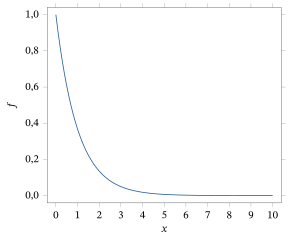
Em algumas aplicações, recebemos alguma informação parcial sobre o \(s\) desconhecido, na forma \(s \in C \subset S\). Nesse caso, substituímos \(P\) pela medida de probabilidade condicional12 \(P(\cdot \mid C)\) ao derivar nossas inferências. São muitos os motivos para fazer isso e, em geral, podemos dizer que a maioria dos estatísticos concorda que essa é a coisa certa a fazer. É importante reconhecer, porém, que esse passo não decorre de um teorema matemático; ele pode, antes, ser visto como um axioma ou princípio básico de inferência. Vamos nos referir a ele como o princípio da probabilidade condicional, que terá papel fundamental em alguns desenvolvimentos posteriores.
Suponha que temos uma máquina cujo tempo de vida tem a distribuição do Exemplo 5.2.1 e que a máquina já está funcionando há um ano. Então as inferências sobre o tempo de vida da máquina se baseiam na distribuição condicional13, dado que \(X > 1\). A densidade dessa distribuição condicional é dada por \(e^{-(x-1)}\) para \(x > 1\). O tempo de vida predito passa a ser \begin{align*} E(X \mid X > 1) &= \int_1^\infty x e^{-(x-1)}\, dx \\ &= -x e^{-(x-1)} \Big|_1^\infty + \int_1^\infty e^{-(x-1)}\, dx = 2. \end{align*} O fato de o tempo de vida adicional ser igual ao tempo de vida predito antes de a máquina começar a funcionar é uma característica especial da distribuição Exponencial. Isso não vale em geral (ver Exercício 5.2.4).
A probabilidade de cauda que mede quão plausível é o valor \(x_0 = 5\) é dada por \[ P(X > 5 \mid X > 1) = \int_5^\infty e^{-(x-1)}\, dx = e^{-4} = 0{,}0183, \] o que indica que \(x_0 = 5\) é um pouco mais plausível diante do fato de a máquina já ter sobrevivido um ano. O menor intervalo que contém 0,95 da probabilidade condicional passa a ser da forma \((1, c)\), em que \(c\) é a solução de \[ 0{,}95 = \int_1^c e^{-(x-1)}\, dx = e(e^{-1} - e^{-c}), \] o que implica \(c = -\ln\bigl(e^{-1} - 0{,}95e^{-1}\bigr)\) \({}= 3{,}9957\).
Nosso ponto principal nesta seção é simplesmente que já temos alguma familiaridade com conceitos inferenciais. Além disso, por meio do princípio da probabilidade condicional, temos uma regra ou axioma básico que governa como fazemos inferências no contexto em que a medida de probabilidade \(P\) é conhecida e \(s\) não é conhecido.
Resumo da Seção 5.2
- Modelos de probabilidade são usados para modelar a incerteza sobre respostas futuras.
- Podemos usar a distribuição de probabilidade para predizer uma resposta futura ou para avaliar se um dado valor faz sentido ou não como um possível valor futuro da distribuição.
Exercícios
5.2.1 Às vezes, a moda de uma densidade (o ponto em que a densidade assume seu valor máximo) é escolhida como preditor14 de um valor futuro de uma resposta. Determine esse preditor nos Exemplos 5.2.1 e 5.2.2 e comente sua adequação como preditor.
5.2.2 Suponha que se tenha decidido usar a média de uma distribuição para predizer uma resposta futura. No Exemplo 5.2.1, calcule o erro quadrático médio15 (o valor esperado do quadrado do erro entre um valor futuro e seu preditor) desse preditor, antes de observar o valor. A que característica da distribuição do tempo de vida isso corresponde?
5.2.3 Faça o gráfico da densidade da distribuição obtida como mistura de uma distribuição normal com média 4 e variância16 1 e uma distribuição normal com média \(-4\) e variância 1, em que a probabilidade de mistura é 0,5. Explique por que nem a média nem a moda é um preditor adequado neste caso. (Sugestão: Seção 2.5.4.)
5.2.4 Repita os cálculos dos Exemplos 5.2.1 e 5.2.2 quando se sabe que o tempo de vida de uma máquina tem a distribuição de \(Y = 10X\), em que \(X \sim \text{Uniforme}[0, 1]\).
5.2.5 Suponha que \(X \sim N(10, 2)\). Que valor você registraria como predição de um valor futuro de \(X\)? Como você justificaria sua escolha?
5.2.6 Suponha que \(X \sim N(10, 2)\). Registre o menor intervalo que contém 0,95 da probabilidade para uma resposta futura. (Sugestão: considere um gráfico da densidade.)
5.2.7 Suponha que \(X \sim \text{Gama}(3, 6)\). Que valor você registraria como predição de um valor futuro de \(X\)? Como você justificaria sua escolha?
5.2.8 Suponha que \(X \sim \text{Poisson}(5)\). Que valor você registraria como predição de um valor futuro de \(X\)? Como você justificaria sua escolha?
5.2.9 Suponha que \(X \sim \text{Geométrica}(1/3)\). Que valor você registraria como predição de um valor futuro de \(X\)?
5.2.10 Suponha que \(X\) tenha a seguinte distribuição de probabilidade.
| \(x\) | \(1\) | \(2\) | \(3\) | \(4\) |
|---|---|---|---|---|
| \(P(X = x)\) | \(1/2\) | \(1/4\) | \(1/8\) | \(1/8\) |
(a) Registre uma predição de um valor futuro de \(X\).(b) Suponha que, em seguida, lhe digam que \(X \ge 2\). Registre uma predição de um valor futuro de \(X\) que use essa informação.
Problemas
5.2.11 Suponha que uma moeda honesta seja lançada 10 vezes e que a resposta \(X\) medida seja o número de vezes que observamos cara. (a) Se você usar o valor esperado da resposta como preditor, qual é a predição de uma resposta futura \(X\)?(b) Usando a Tabela D.6 (ou um pacote estatístico), calcule um menor intervalo que contenha pelo menos 0,95 da probabilidade para \(X\). Observe que pode ajudar fazer antes o gráfico da função de probabilidade17 de \(X\).(c) Que região você usaria para avaliar se um valor \(s_0\) é ou não um valor futuro possível? (Sugestão: quais são as regiões de baixa probabilidade da distribuição?) Avalie se \(x = 8\) é ou não plausível.
5.2.12 No Exemplo 5.2.1, explique (intuitivamente) por que o intervalo \((0; 2{,}9957)\) é o menor intervalo que contém 0,95 da probabilidade para o tempo de vida.
5.2.13 (Continuação do Problema 5.2.11) Suponha que nos digam que o número de caras observado é par. Repita as partes (a), (b) e (c).
5.2.14 Suponha que uma resposta \(X\) tenha distribuição \(\text{Beta}(a, b)\) com \(a, b > 1\) fixos (ver Problema 2.4.16). Determine a média e a moda (ponto em que a densidade assume seu máximo) dessa distribuição e avalie qual é o preditor mais preciso de um \(X\) futuro quando se usa o erro quadrático médio, isto é, a distância quadrática esperada entre \(X\) e a predição.
5.2.15 Suponha que uma resposta \(X\) tenha distribuição \(N(0, 1)\) e que decidimos predizer um valor futuro usando a média da distribuição. (a) Determine a predição de um \(X\) futuro.(b) Determine a predição de um \(Y = X^2\) futuro.(c) Comente a relação (ou a falta dela) entre as respostas das partes (a) e (b).
5.2.16 Suponha que \(X \sim \text{Geométrica}(1/3)\). Determine o menor intervalo que contém 0,95 da probabilidade para um \(X\) futuro. (Sugestão: faça o gráfico da função de probabilidade e registre a função de distribuição.)
5.2.17 Suponha que \(X \sim \text{Geométrica}(1/3)\) e que nos digam que \(X > 5\). Que valor você registraria como predição de um valor futuro de \(X\)? Determine o menor intervalo que contém 0,95 da probabilidade para um \(X\) futuro. (Sugestão: faça o gráfico da função de probabilidade e registre a função de distribuição.)
Tópicos para discussão
5.2.18 Você acha realista que um profissional proceda como se conhecesse a verdadeira distribuição de probabilidade de uma resposta num problema?
5.3 Modelos Estatísticos
Em um problema estatístico, enfrentamos uma incerteza de natureza diferente daquela que surge na Seção 5.2. Em um contexto estatístico, observamos os dados \(s\), mas não temos certeza sobre \(P\). Numa situação assim, queremos construir inferências sobre \(P\) com base em \(s\). Essa é a situação inversa da discutida na Seção 5.2.
Como devemos proceder para fazer essas inferências estatísticas provavelmente não é nada óbvio. Na verdade, há várias abordagens possíveis, que discutiremos nos capítulos seguintes. Neste capítulo, vamos desenvolver os ingredientes básicos de todas as abordagens.
Comum a praticamente todas as abordagens da inferência estatística é o conceito de modelo estatístico para os dados \(s\). Ele toma a forma de um conjunto \(\{P_\theta : \theta \in \negrito{\Omega}\}\) de medidas de probabilidade, uma das quais corresponde à verdadeira medida de probabilidade desconhecida \(P\) que produziu os dados \(s\). Em outras palavras, estamos afirmando que existe um mecanismo aleatório gerando \(s\), e sabemos que a medida de probabilidade correspondente \(P\) é uma das medidas de probabilidade em \(\{P_\theta : \theta \in \negrito{\Omega}\}\).
O modelo estatístico \(\{P_\theta : \theta \in \negrito{\Omega}\}\) corresponde à informação que um estatístico traz para a aplicação sobre qual é a verdadeira medida de probabilidade, ou pelo menos sobre o que ele está disposto a supor sobre ela. A variável \(\theta\) é chamada de parâmetro do modelo, e o conjunto \(\negrito{\Omega}\) é chamado de espaço paramétrico18. Em geral, usamos modelos em que \(\theta \in \negrito{\Omega}\) indexa as medidas de probabilidade do modelo, isto é, \(P_{\theta_1} = P_{\theta_2}\) se e somente se \(\theta_1 = \theta_2\). Se todas as medidas de probabilidade \(P_\theta\) puderem ser apresentadas por meio de funções de probabilidade ou de funções densidade \(f_\theta\) (por conveniência, não vamos distinguir na notação entre o caso discreto e o contínuo), então é comum escrever o modelo estatístico como \(\{f_\theta : \theta \in \negrito{\Omega}\}\).
Pela definição de modelo estatístico, vemos que existe um único valor \(\theta \in \negrito{\Omega}\) tal que \(P_\theta\) é a verdadeira medida de probabilidade. Chamamos esse valor de valor verdadeiro do parâmetro. Evidentemente, é equivalente falar em fazer inferências sobre o valor verdadeiro do parâmetro em vez de sobre a verdadeira medida de probabilidade, isto é, uma inferência sobre o valor verdadeiro de \(\theta\) é, ao mesmo tempo, uma inferência sobre a verdadeira distribuição de probabilidade. Assim, por exemplo, podemos querer estimar o valor verdadeiro de \(\theta\), construir pequenas regiões em \(\negrito{\Omega}\) que provavelmente contêm o valor verdadeiro, ou avaliar se os dados estão ou não de acordo com algum valor particular \(\theta_0\), sugerido como o valor verdadeiro. Esses são tipos de inferência exatamente como os que discutimos na Seção 5.2, mas aqui a situação é bem diferente.
Suponha que temos uma urna com 100 fichas, cada uma preta \(B\) ou branca \(W\). Suponha ainda que nos dizem que há 50 ou 60 fichas pretas na urna. As fichas são bem misturadas e, em seguida, duas fichas são retiradas sem reposição. O objetivo é fazer uma inferência sobre o verdadeiro número de fichas pretas na urna, tendo observado os dados \(s = (s_1, s_2)\), em que \(s_i\) é a cor da \(i\)-ésima ficha retirada.
Nesse caso, podemos tomar o modelo estatístico como \(\{P_\theta : \theta \in \negrito{\Omega}\}\), em que \(\theta\) é o número de fichas pretas na urna, de modo que \(\negrito{\Omega} = \{50, 60\}\), e \(P_\theta\) é a medida de probabilidade em \[ S = \{(B, B), (B, W), (W, B), (W, W)\} \] correspondente a \(\theta\). Portanto, \(P_{50}\) atribui a probabilidade \(50 \cdot 49/(100 \cdot 99)\) a cada uma das sequências \((B, B)\) e \((W, W)\) e a probabilidade \(50 \cdot 50/(100 \cdot 99)\) a cada uma das sequências \((B, W)\) e \((W, B)\), e \(P_{60}\) atribui a probabilidade \(60 \cdot 59/(100 \cdot 99)\) à sequência \((B, B)\), a probabilidade \(40 \cdot 39/(100 \cdot 99)\) à sequência \((W, W)\) e a probabilidade \(60 \cdot 40/(100 \cdot 99)\) a cada uma das sequências \((B, W)\) e \((W, B)\).
A escolha do parâmetro é um tanto arbitrária, pois poderíamos facilmente ter rotulado as medidas de probabilidade possíveis como \(P_1\) e \(P_2\), respectivamente. O parâmetro é, em essência, apenas um rótulo que nos permite distinguir entre os possíveis candidatos à verdadeira medida de probabilidade. É comum, no entanto, escolher esse rótulo de forma conveniente, para que ele signifique algo no problema em discussão.
Registramos aqui mais alguma terminologia de uso comum. Se um único valor observado de uma resposta \(X\) tem o modelo estatístico \(\{f_\theta : \theta \in \negrito{\Omega}\}\), então uma amostra \((X_1, \ldots, X_n)\) (lembre que, aqui, amostra significa que as \(X_i\) são independentes e identicamente distribuídas19; veja a Definição 2.8.6) tem densidade conjunta20 dada por \(f_\theta(x_1)\, f_\theta(x_2) \cdots f_\theta(x_n)\) para algum \(\theta \in \negrito{\Omega}\). Isso especifica o modelo estatístico para a resposta \((X_1, \ldots, X_n)\). Chamamos isso de modelo estatístico para uma amostra. Naturalmente, o valor verdadeiro de \(\theta\) no modelo estatístico para uma amostra é o mesmo que para uma única observação. Às vezes, em vez de falar do modelo estatístico para uma amostra, falamos de uma amostra do modelo estatístico \(\{f_\theta : \theta \in \negrito{\Omega}\}\).
Observe que, sempre que possível, usaremos letras maiúsculas para denotar um valor não observado de uma variável aleatória21 \(X\) e letras minúsculas para denotar o valor observado. Assim, uma amostra observada \((X_1, \ldots, X_n)\) será denotada por \((x_1, \ldots, x_n)\).
Suponha que há duas fábricas de máquinas. Sabe-se que as máquinas construídas pela primeira fábrica têm tempos de vida com distribuição Exponencial\((1)\), enquanto as máquinas fabricadas pela segunda fábrica têm tempos de vida com distribuição Exponencial\((2/3)\). As densidades dessas distribuições estão representadas na Figura 5.3.1.22
Você comprou cinco dessas máquinas sabendo que todas as cinco vieram da mesma fábrica, mas não sabe de qual. Em seguida, você observa os tempos de vida dessas máquinas, obtendo a amostra \((x_1, \ldots, x_5)\), e quer fazer inferências sobre a verdadeira \(P\).
Nesse caso, o modelo estatístico para uma única observação é formado por duas medidas de probabilidade \(\{P_1, P_2\}\), em que \(P_1\) é a medida de probabilidade Exponencial\((1)\) e \(P_2\) é a medida de probabilidade Exponencial\((2/3)\). Aqui, tomamos o parâmetro como \(\theta \in \negrito{\Omega} = \{1, 2\}\).
Claramente, tempos de vida observados mais longos favorecem \(\theta = 2\). Por exemplo, se \[ (x_1, \ldots, x_5) = (5{,}0;\ 3{,}5;\ 3{,}3;\ 4{,}1;\ 2{,}8), \] então intuitivamente temos mais certeza de que \(\theta = 2\) do que se \[ (x_1, \ldots, x_5) = (2{,}0;\ 2{,}5;\ 3{,}0;\ 3{,}1;\ 1{,}8). \] O objeto da inferência estatística é tornar mais precisas afirmações como essa e quantificar nossa incerteza quanto à validade dessas afirmações.
Observamos de novo que a quantidade \(\theta\) serve apenas como rótulo para as distribuições do modelo. O valor de \(\theta\) não tem outra interpretação além de rótulo, e poderíamos muito bem ter usado outros valores como rótulos. Em muitas aplicações, no entanto, o parâmetro \(\theta\) é tomado como alguma característica da distribuição que assume um valor único para cada distribuição do modelo. Aqui, poderíamos ter tomado \(\theta\) como a média, e então o espaço paramétrico seria \(\negrito{\Omega} = \{1;\ 1{,}5\}\). Note que poderíamos igualmente ter usado o primeiro quartil, ou, aliás, qualquer outro quantil, para rotular as distribuições, desde que cada distribuição da família forneça um valor único para a característica escolhida. De modo geral, qualquer transformação injetora23 de um parâmetro é aceitável como parametrização de um modelo estatístico. Quando trocamos os rótulos, dizemos que fizemos uma reparametrização do modelo estatístico.
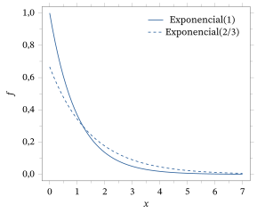
Consideramos agora dois exemplos importantes de modelos estatísticos. Eles são importantes porque aparecem com frequência nas aplicações.
Suponha que \((x_1, \ldots, x_n)\) seja uma amostra de uma distribuição Bernoulli\((\theta)\) com \(\theta \in [0, 1]\) desconhecido. Poderíamos estar observando os resultados de lançamentos de uma moeda e registrando \(X_i\) igual a 1 sempre que sai cara no \(i\)-ésimo lançamento e igual a 0 caso contrário. Ou então poderíamos estar observando itens produzidos num processo industrial e registrando \(X_i\) igual a 1 sempre que o \(i\)-ésimo item é defeituoso e 0 caso contrário. Numa aplicação biomédica, a resposta \(X_i = 1\) poderia indicar que um tratamento num paciente teve sucesso, enquanto \(X_i = 0\) indica um fracasso. Em todos esses casos, queremos conhecer o valor verdadeiro de \(\theta\), pois ele nos diz algo importante sobre a moeda que estamos lançando, sobre o processo industrial ou sobre o tratamento médico, respectivamente.
Suponha agora que não temos nenhuma informação sobre a verdadeira probabilidade \(\theta\). Por isso, tomamos o espaço paramétrico como \(\negrito{\Omega} = [0, 1]\), o conjunto de todos os valores possíveis de \(\theta\). A função de probabilidade do \(i\)-ésimo item da amostra é dada por \[ f_\theta(x_i) = \theta^{x_i} (1 - \theta)^{1 - x_i}, \] e a função de probabilidade da amostra é dada por \[ \prod_{i=1}^n f_\theta(x_i) = \prod_{i=1}^n \theta^{x_i} (1 - \theta)^{1 - x_i} = \theta^{n\bar x} (1 - \theta)^{n(1 - \bar x)}. \] Isso especifica o modelo para uma amostra.
Note que poderíamos parametrizar esse modelo por qualquer função injetora de \(\theta\). Por exemplo, \(\alpha = \theta^2\) serviria (pois é injetora em \(\negrito{\Omega}\)), assim como \(\psi = \ln\{\theta/(1 - \theta)\}\).
Suponha que \((x_1, \ldots, x_n)\) seja uma amostra de uma distribuição \(N(\mu, \sigma^2)\) com \(\theta = (\mu, \sigma^2) \in R^1 \times R^+\) desconhecido, em que \(R^+ = (0, \infty)\). Por exemplo, podemos ter observações das alturas, em centímetros, de indivíduos de uma população e achar razoável supor que a distribuição das alturas na população é normal, com média e desvio padrão25 desconhecidos.
A densidade da amostra é então dada por \begin{align*} \prod_{i=1}^n f_{(\mu, \sigma^2)}(x_i) &= \left(2\pi\sigma^2\right)^{-n/2} \exp\left\{-\frac{1}{2\sigma^2} \sum_{i=1}^n (x_i - \mu)^2\right\}\\ &= \left(2\pi\sigma^2\right)^{-n/2} \exp\left\{-\frac{n}{2\sigma^2} (\bar x - \mu)^2 - \frac{n - 1}{2\sigma^2} s^2\right\}, \end{align*} pois (Problema 5.3.13) \begin{equation} \sum_{i=1}^n (x_i - \mu)^2 = n(\bar x - \mu)^2 + \sum_{i=1}^n (x_i - \bar x)^2, \tag{5.3.1} \end{equation} em que \[ \bar x = \frac{1}{n} \sum_{i=1}^n x_i \] é a média amostral e \[ s^2 = \frac{1}{n - 1} \sum_{i=1}^n (x_i - \bar x)^2 \] é a variância amostral.
Parametrizações alternativas desse modelo são de uso comum. Por exemplo, em vez de usar \((\mu, \sigma^2)\), às vezes \((\mu, \sigma^{-2})\), ou \((\mu, \sigma)\), ou \((\mu, \ln\sigma)\) é uma escolha conveniente. Note que \(\ln\sigma\) percorre \(R^1\) quando \(\sigma\) varia em \(R^+\).
Na verdade, podemos nos perguntar quão adequado é o modelo do Exemplo 5.3.4 para a distribuição das alturas numa população, já que, em qualquer população finita, a verdadeira distribuição é discreta (há apenas uma quantidade finita de estudantes). É claro que uma distribuição normal pode dar uma boa aproximação de uma distribuição discreta, como no Exemplo 4.4.9. Assim, no Exemplo 5.3.4, estamos supondo também que uma distribuição de probabilidade contínua pode dar uma aproximação próxima da verdadeira distribuição discreta. Acontece que essas aproximações podem levar a grandes simplificações na obtenção das inferências, e por isso as usamos sempre que possível. Uma aproximação assim, é claro, não se aplica ao Exemplo 5.3.3.
Note também que as alturas serão sempre expressas em alguma unidade específica, por exemplo, centímetros; com base nisso, sabemos que a média populacional tem de estar numa certa faixa de valores, por exemplo, \(\mu \in (0, 300)\), mas o modelo estatístico permite qualquer valor de \(\mu\). Assim, muitas vezes temos de fato informação adicional sobre o valor verdadeiro do parâmetro de um modelo, mas ela é um tanto imprecisa; por exemplo, provavelmente também temos \(\mu \in (100, 300)\). No Capítulo 7, discutiremos maneiras de incorporar essa informação à nossa análise.
De onde vem, numa aplicação, a informação do modelo \(\{P_\theta : \theta \in \negrito{\Omega}\}\)? Por exemplo, como poderíamos saber que as alturas têm distribuição aproximadamente normal no Exemplo 5.3.4? Às vezes essa informação se baseia na experiência anterior com aplicações relacionadas, mas muitas vezes ela é uma suposição que precisa ser verificada antes que os procedimentos de inferência possam ser usados. Os procedimentos concebidos para verificar essas suposições são chamados de procedimentos de verificação de modelos26, que serão discutidos no Capítulo 9. Na prática, os procedimentos de verificação de modelos são indispensáveis; do contrário, as inferências tiradas dos dados e do modelo estatístico podem estar erradas se o modelo estiver errado.
Resumo da Seção 5.3
- Numa aplicação estatística, não conhecemos a distribuição de uma resposta, mas sabemos (ou estamos dispostos a supor) que a verdadeira distribuição de probabilidade é uma de um conjunto de distribuições possíveis \(\{f_\theta : \theta \in \negrito{\Omega}\}\), em que \(f_\theta\) é a densidade ou a função de probabilidade (a que for pertinente) da resposta. O conjunto das distribuições possíveis é chamado de modelo estatístico.
- O conjunto \(\negrito{\Omega}\) é chamado de espaço paramétrico, e a variável \(\theta\) é chamada de parâmetro do modelo. Como cada valor de \(\theta\) corresponde a uma distribuição de probabilidade distinta no modelo, podemos falar do valor verdadeiro de \(\theta\), já que ele dá a verdadeira distribuição por meio de \(f_\theta\).
Exercícios
5.3.1 Suponha que há três moedas: sabe-se que uma é honesta, outra tem probabilidade \(1/3\) de dar cara num único lançamento e a outra tem probabilidade \(2/3\) de dar cara num único lançamento. Uma moeda é escolhida (não aleatoriamente) e lançada cinco vezes. O objetivo é fazer uma inferência, com base na amostra, sobre qual das moedas está sendo lançada. Descreva completamente um modelo estatístico para uma única resposta e para a amostra.
5.3.2 Suponha que uma face de um dado simétrico de seis faces está duplicada, mas não sabemos qual. Sabemos que, se o 1 está duplicado, então o 2 não aparece; caso contrário, o 1 não aparece. Descreva o modelo estatístico para um único lançamento.
5.3.3 Suponha que temos duas populações (I e II) e que se sabe que a variável \(X\) tem distribuição \(N(10, 2)\) na população I e distribuição \(N(8, 3)\) na população II. Uma amostra \((X_1, \ldots, X_n)\) é gerada a partir de uma das populações; não lhe dizem de qual população a amostra veio, mas pedem que você tire inferências sobre a verdadeira distribuição com base na amostra. Descreva o modelo estatístico para esse problema. Você poderia parametrizar esse modelo pela média populacional? E pela variância populacional? Às vezes, problemas como esse são chamados de problemas de classificação, porque fazer inferências sobre a verdadeira distribuição equivale a classificar a amostra como pertencente a uma das populações.
5.3.4 Suponha a mesma situação do Exercício 5.3.3, mas agora a distribuição da população I é \(N(10, 2)\) e a da população II é \(N(10, 3)\). Você poderia parametrizar o modelo pela média populacional? E pela variância populacional? Justifique sua resposta.
5.3.5 Suponha que um processo de fabricação produz baterias cujos tempos de vida sabidamente têm distribuição exponencial, mas com a média da distribuição completamente desconhecida. Descreva o modelo estatístico para uma única observação. É possível parametrizar esse modelo pela média? É possível parametrizar esse modelo pela variância? É possível parametrizar esse modelo pelo coeficiente de variação (o coeficiente de variação de uma distribuição é igual ao desvio padrão dividido pela média)?
5.3.6 Suponha que se sabe que uma resposta \(X\) tem distribuição \(\text{Uniforme}[0, \beta]\), em que \(\beta > 0\) é desconhecido. É possível parametrizar esse modelo pelo primeiro quartil da distribuição? (O primeiro quartil da distribuição de uma variável aleatória \(X\) é o ponto \(c\) que satisfaz \(P(X \le c) = 0{,}25\).) Explique por quê.
5.3.7 Suponha que se sabe que uma variável aleatória \(X\) segue uma das seguintes distribuições.
| \(\theta\) | \(P_\theta(X = 1)\) | \(P_\theta(X = 2)\) | \(P_\theta(X = 3)\) |
|---|---|---|---|
| \(A\) | \(1/2\) | \(1/2\) | \(0\) |
| \(B\) | \(0\) | \(1/2\) | \(1/2\) |
(a) Qual é o espaço paramétrico \(\negrito{\Omega}\)?(b) Suponha que observamos o valor \(X = 1\). Qual é o valor verdadeiro do parâmetro? Qual é a verdadeira distribuição de \(X\)?(c) O que você poderia dizer sobre o valor verdadeiro do parâmetro se tivesse observado \(X = 2\)?
5.3.8 Suponha que temos um modelo estatístico \(\{P_1, P_2\}\), em que \(P_1\) e \(P_2\) são medidas de probabilidade num espaço amostral \(S\). Suponha ainda que existe um subconjunto \(C \subset S\) tal que \(P_1(C) = 1\), enquanto \(P_2(C^c) = 1\). Discuta como você faria uma inferência sobre a verdadeira distribuição de uma resposta \(s\) depois de ter observado uma única observação.
5.3.9 Suponha que você sabe que a distribuição de probabilidade de uma variável \(X\) é \(P_1\) ou \(P_2\). Se você observa \(X = 1\) e \(P_1(X = 1) = 0{,}75\), enquanto \(P_2(X = 1) = 0{,}001\), qual você diria que é a verdadeira distribuição de \(X\)? Justifique essa conclusão.
5.3.10 Suponha que lhe dizem que a turma nº 1 tem 35 homens e 65 mulheres, enquanto a turma nº 2 tem 45 homens e 55 mulheres. Dizem-lhe também que uma determinada pessoa de uma dessas turmas é mulher, mas não lhe dizem de qual turma ela veio. (a) Construa um modelo estatístico para esse problema, identificando o parâmetro, o espaço paramétrico e a família de distribuições. Identifique também os dados.(b) Com base nos dados, você acha que é possível fazer uma inferência confiável sobre o valor verdadeiro do parâmetro? Explique por quê.(c) Se você tivesse de arriscar de qual distribuição vieram os dados, que escolha faria? Explique por quê.
Problemas
5.3.11 Suponha que, no Exemplo 5.3.3, parametrizamos o modelo por \(\psi = \ln\{\theta/(1 - \theta)\}\). Escreva o modelo estatístico com essa parametrização, isto é, escreva a função de probabilidade usando \(\psi\) como parâmetro e escreva o espaço paramétrico correspondente.
5.3.12 Suponha que, no Exemplo 5.3.4, parametrizamos o modelo por \((\mu, \ln\sigma) = (\mu, \psi)\). Escreva o modelo estatístico com essa parametrização, isto é, escreva a função densidade27 usando \((\mu, \psi)\) como parâmetro e escreva o espaço paramétrico correspondente.
5.3.13 Prove a identidade (5.3.1).
5.3.14 Uma amostra \((X_1, \ldots, X_n)\) é gerada a partir de uma distribuição Bernoulli\((\theta)\) com \(\theta \in [0, 1]\) desconhecido, mas o estatístico observa apenas \(T = \sum_{i=1}^n X_i\). Descreva o modelo estatístico para os dados observados.
5.3.15 Suponha que se sabe que uma resposta \(X\) tem distribuição \(N(\mu, \sigma^2)\), em que \(\theta = (\mu, \sigma^2) \in R^1 \times R^+\) e \(\theta\) é completamente desconhecido. Mostre como calcular o primeiro quartil de cada distribuição desse modelo a partir dos valores \((\mu, \sigma^2)\). É possível parametrizar o modelo pelo primeiro quartil? Justifique sua resposta.
5.3.16 Suponha que se sabe que a resposta \(X\) tem distribuição \(N(Y, \sigma^2)\), em que \(Y \sim N(0, \delta^2)\) e \(\sigma^2, \delta^2 > 0\) são completamente desconhecidos. Descreva o modelo estatístico para uma observação \((X, Y)\). Se \(Y\) não é observada, descreva o modelo estatístico para \(X\).
5.3.17 Suponha que temos um modelo estatístico \(\{P_1, P_2\}\), em que \(P_1\) é uma distribuição \(N(10, 1)\), enquanto \(P_2\) é uma distribuição \(N(0, 1)\). (a) É possível fazer algum tipo de inferência confiável sobre a verdadeira distribuição com base numa única observação? Por quê?(b) Repita a parte (a), mas agora suponha que \(P_1\) é uma distribuição \(N(1, 1)\).
5.3.18 Suponha que temos um modelo estatístico \(\{P_1, P_2\}\), em que \(P_1\) é uma distribuição \(N(1, 1)\), enquanto \(P_2\) é uma distribuição \(N(0, 1)\). Suponha ainda que temos uma amostra \(x_1, \ldots, x_{100}\) da verdadeira distribuição. Discuta como você poderia fazer uma inferência sobre a verdadeira distribuição com base na amostra.
Tópicos para discussão
5.3.19 Explique por que você acha importante que os estatísticos digam com toda a clareza o que estão supondo sempre que fazem uma análise estatística.
5.3.20 Considere o modelo estatístico dado pela coleção das distribuições \(N(\mu, \sigma_0^2)\), em que \(\mu \in R^1\) é considerado completamente desconhecido, mas \(\sigma_0^2\) é suposto conhecido. Você acha que esse é um modelo razoável para usar numa aplicação? Justifique sua resposta.
5.4 Coleta de Dados
Os desenvolvimentos das Seções 5.2 e 5.3 se baseiam no fato de a resposta observada \(s\) ser uma realização de uma medida de probabilidade \(P\). Na verdade, em muitas aplicações, isso é uma suposição. Muitas vezes recebemos dados que poderiam ter sido produzidos dessa forma, mas nem sempre podemos ter certeza.
Quando não podemos ter certeza de que os dados foram produzidos por um mecanismo aleatório, a análise estatística dos dados é chamada de estudo observacional28. Num estudo observacional, o estatístico apenas observa os dados, em vez de intervir diretamente na geração deles para garantir que a suposição de aleatoriedade valha. Por exemplo, suponha que um professor coleta dados de seus alunos para um estudo que examina a relação entre as notas e o emprego de meio período. É razoável considerar que os dados coletados vieram de uma distribuição de probabilidade? Se sim, como justificaríamos isso?
É importante que o estatístico distinga com cuidado entre as situações que são estudos observacionais e as que não são. Como ilustra a discussão a seguir, há ressalvas que precisam ser feitas à análise de um estudo observacional. Embora as análises estatísticas de estudos observacionais sejam válidas e, de fato, importantes, precisamos estar cientes de suas limitações ao interpretar os resultados.
5.4.1 Populações Finitas
Suponha que temos um conjunto finito \(\Pi\) de objetos, chamado de população, e uma função real \(X\) (às vezes chamada de medição) definida em \(\Pi\). Assim, para cada \(\pi \in \Pi\), temos uma quantidade real \(X(\pi)\) que mede algum aspecto ou característica de \(\pi\).
Por exemplo, \(\Pi\) poderia ser o conjunto de todos os alunos atualmente matriculados em tempo integral numa certa universidade, com \(X(\pi)\) a altura do aluno \(\pi\) em centímetros. Ou, para o mesmo \(\Pi\), poderíamos tomar \(X(\pi)\) como o gênero do aluno \(\pi\), em que \(X(\pi) = 1\) indica feminino e \(X(\pi) = 2\) indica masculino. Aqui, a altura é uma variável quantitativa, porque seus valores significam algo numa escala numérica, e podemos fazer contas com esses valores, por exemplo, calcular uma média. Já o gênero é um exemplo de variável categórica, porque seus valores servem apenas para classificar, e qualquer outra escolha de números reais distintos teria servido tão bem quanto a que fizemos. O primeiro passo de uma análise estatística é determinar os tipos de variáveis com que estamos trabalhando, porque as técnicas de análise estatística adequadas dependem disso.
A população e a medição, juntas, produzem uma distribuição populacional sobre a população. Ela é especificada pela função de distribuição acumulada29 populacional \(F_X : R^1 \to [0, 1]\), em que \[ F_X(x) = \frac{\lvert \{\pi : X(\pi) \le x\} \rvert}{N}, \] sendo \(\lvert A \rvert\) o número de elementos do conjunto \(A\) e \(N = \lvert \Pi \rvert\). Portanto, \(F_X(x)\) é a proporção de elementos de \(\Pi\) cuja medição é menor ou igual a \(x\).
Considere o exemplo simples a seguir, em que podemos calcular \(F_X\) exatamente.
Suponha que \(\Pi\) é uma população de \(N = 20\) lotes de terra do mesmo tamanho. Suponha ainda que \(X(\pi)\) é uma medida da fertilidade do lote \(\pi\) numa escala de 10 pontos e que foram obtidas as seguintes medições.
| 4 | 8 | 6 | 7 | 8 | 3 | 7 | 5 | 4 | 6 |
|---|---|---|---|---|---|---|---|---|---|
| 9 | 5 | 7 | 5 | 8 | 3 | 4 | 7 | 8 | 3 |
Temos então \[ F_X(x) = \begin{cases} 0 & x < 3 \\ 3/20 & 3 \le x < 4 \\ 6/20 & 4 \le x < 5 \\ 9/20 & 5 \le x < 6 \\ 11/20 & 6 \le x < 7 \\ 15/20 & 7 \le x < 8 \\ 19/20 & 8 \le x < 9 \\ 1 & 9 \le x \end{cases} \] porque, por exemplo, 6 dos 20 lotes têm medição de fertilidade menor ou igual a 4.
O objetivo do estatístico nesse contexto é conhecer a função \(F_X\) com a maior precisão possível. Se conhecemos \(F_X\) exatamente, então identificamos a distribuição de \(X\) sobre \(\Pi\). Uma forma de conhecer a distribuição exatamente é fazer um censo, em que o estatístico sai a campo, observa \(X(\pi)\) para todo \(\pi \in \Pi\) e então calcula \(F_X\). Às vezes isso é viável, mas muitas vezes não é possível nem mesmo desejável, por causa dos custos de reunir com exatidão todas as medições — pense em como seria difícil coletar as alturas de todos os alunos da sua escola.
Embora às vezes um censo seja necessário, e até exigido por lei, muitas vezes é possível obter uma aproximação muito precisa de \(F_X\) selecionando um subconjunto \[ \{\pi_1, \ldots, \pi_n\} \subset \Pi \] para algum \(n < N\). Aproximamos então \(F_X(x)\) pela função de distribuição empírica30, definida por \begin{align*} \hat{F}_X(x) &= \frac{\lvert \{\pi_i : X(\pi_i) \le x, i = 1, \ldots, n\} \rvert}{n} \\ &= \frac{1}{n} \sum_{i=1}^{n} I_{(-\infty, x]}(X(\pi_i)). \end{align*}
Poderíamos também medir mais de um aspecto de \(\pi\) para produzir uma medição multivariada \(X : \Pi \to R^k\) para algum \(k\). Por exemplo, se \(\Pi\) é de novo a população de alunos, poderíamos ter \(X(\pi) = (X_1(\pi), X_2(\pi))\), em que \(X_1(\pi)\) é a altura em centímetros do aluno \(\pi\) e \(X_2(\pi)\) é o peso do aluno \(\pi\) em quilogramas. Discutiremos medições multivariadas no Capítulo 10, em que nosso interesse está nas relações entre variáveis, mas aqui nos concentramos em medições univariadas.
Há duas perguntas que precisamos responder agora — a saber, como devemos selecionar o subconjunto \(\{\pi_1, \ldots, \pi_n\}\) e quão grande deve ser \(n\)?
5.4.2 Amostragem Aleatória Simples
Vamos tratar primeiro da questão de selecionar \(\{\pi_1, \ldots, \pi_n\}\). Suponha que selecionamos esse subconjunto de acordo com alguma regra dada, baseada no rótulo único que cada \(\pi \in \Pi\) possui. Por exemplo, se o rótulo é um número, poderíamos ordenar os números e tomar os \(n\) elementos de menores rótulos. Ou poderíamos ordenar os números e tomar um elemento sim, um não, até ter um subconjunto de \(n\) elementos, e assim por diante.
Há muitas regras desse tipo que poderíamos aplicar, e todas elas têm um problema básico. Se queremos que \(\hat{F}_X\) aproxime \(F_X\) para a população inteira, então, ao usarmos uma regra, corremos o risco de selecionar \(\{\pi_1, \ldots, \pi_n\}\) apenas de uma subpopulação. Por exemplo, se usamos os números de matrícula para identificar cada elemento de uma população de alunos, e os alunos mais antigos têm números de matrícula menores, então, quando \(n\) é muito menor que \(N\) e selecionamos os alunos de menores números de matrícula, \(\hat{F}_X\), na melhor das hipóteses, está apenas aproximando a distribuição de \(X\) na população dos alunos mais antigos. Essa distribuição pode ser muito diferente de \(F_X\). Da mesma forma, para qualquer outra regra que usemos, mesmo que não consigamos imaginar qual poderia ser a subpopulação, pode haver um efeito de seleção, ou viés, induzido que torna a estimativa inválida.
Essa é a ressalva que precisamos fazer ao analisar os resultados de estudos observacionais. Num estudo observacional, os dados são gerados por alguma regra, em geral desconhecida do estatístico; isso significa que quaisquer conclusões tiradas com base nos dados \(X(\pi_1), \ldots, X(\pi_n)\) podem não valer para a população inteira.
Parece haver apenas uma forma de garantir que os efeitos de seleção sejam evitados: o conjunto \(\{\pi_1, \ldots, \pi_n\}\) precisa ser selecionado usando aleatoriedade. Na amostragem aleatória simples31, isso significa que um mecanismo aleatório é usado para selecionar os \(\pi_i\) de modo que cada subconjunto de \(n\) elementos tenha probabilidade \(1/\binom{N}{n}\) de ser escolhido. Por exemplo, poderíamos colocar \(N\) fichas numa tigela, cada uma com um rótulo único correspondente a um elemento da população, e então retirar ao acaso \(n\) fichas da tigela, sem reposição. Os rótulos das fichas retiradas identificam os indivíduos que foram selecionados de \(\Pi\). Como alternativa, para a aleatorização, poderíamos usar uma tabela de números aleatórios, como a Tabela D.1 do Apêndice D (veja a Tabela D.1 para uma descrição de como ela é usada), ou gerar valores aleatórios com um algoritmo de computador (veja a Seção 2.10).
Note que, com a amostragem aleatória simples, \((X(\pi_1), \ldots, X(\pi_n))\) é aleatório. Em particular, quando \(n = 1\), temos então \[ P(X(\pi_1) \le x) = F_X(x), \] isto é, a distribuição de probabilidade da variável aleatória \(X(\pi_1)\) é a mesma que a distribuição populacional.
Considere o contexto do Exemplo 5.4.1. Quando selecionamos ao acaso o primeiro lote de \(\Pi\), é claro que cada lote tem probabilidade \(1/20\) de ser selecionado. Temos então \[ P(X(\pi_1) \le x) = \frac{\lvert \{\pi : X(\pi) \le x\} \rvert}{20} = F_X(x) \] para todo \(x \in R^1\).
Antes de observar a amostra, temos também \(P(X(\pi_2) \le x) = F_X(x)\). Considere, porém, a distribuição de \(X(\pi_2)\) dado que \(X(\pi_1) = x_1\). Como removemos um membro da população, com valor de medição \(x_1\), então \(NF_X(x) - 1\) é o número de indivíduos que restam em \(\Pi\) com \(X(\pi) \le x_1\). Portanto, \[ P(X(\pi_2) \le x \mid X(\pi_1) = x_1) = \begin{cases} \dfrac{NF_X(x) - 1}{N - 1} & x \ge x_1 \\[2ex] \dfrac{NF_X(x)}{N - 1} & x < x_1. \end{cases} \] Note que isso não é igual a \(F_X(x)\).
Assim, com a amostragem aleatória simples, \(X(\pi_1)\) e \(X(\pi_2)\) não são independentes. Observe, porém, que, quando \(N\) é grande, \[ P(X(\pi_2) \le x \mid X(\pi_1) = x_1) \approx F_X(x), \] de modo que \(X(\pi_1)\) e \(X(\pi_2)\) são aproximadamente independentes e identicamente distribuídas (i.i.d.). Contas semelhantes levam à conclusão de que, quando \(N\) é grande e \(n\) é pequeno em relação a \(N\), então, com a amostragem aleatória simples da população, as variáveis aleatórias \[ X(\pi_1), \ldots, X(\pi_n) \] são aproximadamente i.i.d. e com distribuição dada por \(F_X\). Assim, trataremos os valores observados \((x_1, \ldots, x_n)\) de \((X(\pi_1), \ldots, X(\pi_n))\) como uma amostra (no sentido da Definição 2.8.6) de \(F_X\). Neste texto, salvo indicação em contrário, sempre suporemos que \(n\) é pequeno em relação a \(N\), de modo que essa aproximação faça sentido.
Sob a suposição i.i.d., a lei fraca dos grandes números32 (Teorema 4.2.1) implica que a função de distribuição empírica \(\hat{F}_X\) satisfaz \[ \hat{F}_X(x) = \frac{1}{n} \sum_{i=1}^{n} I_{(-\infty, x]}(X(\pi_i)) \xrightarrow{P} F_X(x) \] quando \(n \to \infty\). Vemos então que \(\hat{F}_X\) pode ser considerada uma estimativa da função de distribuição acumulada (fda) populacional \(F_X\).
Sempre que os dados tiverem sido coletados por amostragem aleatória simples, chamaremos a investigação estatística de estudo amostral. É um princípio básico da boa prática estatística que estudos amostrais são sempre preferíveis a estudos observacionais, sempre que forem viáveis. Isso porque podemos ter certeza de que, com um estudo amostral, quaisquer conclusões que tiremos com base na amostra \(\pi_1, \ldots, \pi_n\) valerão para a população de interesse \(\Pi\). Com estudos observacionais, nunca podemos ter certeza de que os dados amostrais não foram, na verdade, selecionados de algum subconjunto próprio de \(\Pi\). Por exemplo, se lhe pedissem para fazer inferências sobre a distribuição das alturas dos alunos da sua escola, mas você selecionasse alguns dos seus amigos como amostra, então é claro que a fda estimada poderia ser muito diferente da fda verdadeira (possivelmente, mais amigos seus são de um gênero do que do outro).
Muitas vezes, porém, não temos escolha senão usar dados observacionais numa análise estatística. Amostrar diretamente da população de interesse pode ser extremamente difícil ou até impossível. Ainda podemos tratar os resultados de tais análises como uma forma de evidência, mas precisamos ter cautela com possíveis efeitos de seleção e reconhecer essa possibilidade. Estudos amostrais constituem um nível mais alto de evidência estatística do que estudos observacionais, já que evitam a possibilidade de efeitos de seleção.
No Capítulo 10, discutiremos experimentos, que constituem o nível mais alto de evidência estatística. Experimentos são apropriados quando estamos investigando a possibilidade de existirem relações de causa e efeito entre variáveis definidas em populações.
A segunda pergunta que precisamos tratar diz respeito à escolha do tamanho da amostra \(n\). Parece natural que queiramos escolher uma amostra tão grande quanto possível. Por outro lado, há sempre custos associados à amostragem, e às vezes cada valor amostral é muito caro de obter. Além disso, muitas vezes, quanto mais dados coletamos, mais difícil é garantir que os dados não sejam corrompidos por diversos erros que podem surgir no processo de coleta. Assim, nossa resposta sobre quão grande \(n\) precisa ser é que queremos escolhê-lo grande o suficiente para obter a precisão necessária, mas não maior que isso. Por conseguinte, o estatístico precisa especificar qual precisão é exigida e, então, \(n\) é determinado.
Veremos nos capítulos seguintes que há vários métodos para especificar a precisão exigida num problema e, então, determinar um valor apropriado para \(n\). Determinar \(n\) é um componente-chave da implementação de um estudo amostral e costuma ser chamado de cálculo do tamanho da amostra.
Se definimos \[ f_X(x) = \frac{\lvert \{\pi : X(\pi) = x\} \rvert}{N} = \frac{1}{N} \sum_{\pi \in \Pi} I_{\{x\}}(X(\pi)), \] isto é, \(f_X(x)\) é a proporção de membros da população que satisfazem \(X(\pi) = x\), então vemos que \(f_X\) faz o papel da função de probabilidade, porque \[ F_X(x) = \sum_{z \le x} f_X(z). \] Chamamos \(f_X\) de função de frequência relativa33 populacional. Agora, \(f_X(x)\) pode ser estimada, com base na amostra \(\{\pi_1, \ldots, \pi_n\}\), por \[ \hat{f}_X(x) = \frac{\lvert \{\pi_i : X(\pi_i) = x, i = 1, \ldots, n\} \rvert}{n} = \frac{1}{n} \sum_{i=1}^{n} I_{\{x\}}(X(\pi_i)), \] isto é, a proporção de membros \(\pi\) da amostra que satisfazem \(X(\pi) = x\).
Com variáveis categóricas, \(\hat{f}_X(x)\) estima a proporção populacional \(f_X(x)\) na categoria especificada por \(x\). Com algumas variáveis quantitativas, porém, \(f_X\) não é uma quantidade apropriada a estimar, e é preciso considerar uma função alternativa.
5.4.3 Histogramas
Variáveis quantitativas podem ainda ser classificadas como variáveis discretas ou contínuas. Variáveis contínuas são aquelas que podemos medir com precisão arbitrária à medida que aumentamos a exatidão de um instrumento de medição. Por exemplo, a altura de um indivíduo poderia ser considerada uma variável contínua, enquanto o número de anos de estudo de um indivíduo seria considerado uma variável quantitativa discreta. Para variáveis quantitativas discretas, \(f_X\) é uma quantidade apropriada para descrever uma distribuição populacional, mas procedemos de outro modo com variáveis quantitativas contínuas.
Suponha que \(X\) é uma variável quantitativa contínua. Nesse caso, faz mais sentido agrupar os valores em intervalos, dados por \[ (h_1, h_2], (h_2, h_3], \ldots, (h_{m-1}, h_m], \] em que os \(h_i\) são escolhidos de modo que \(h_1 < h_2 < \cdots < h_m\), com \((h_1, h_m)\) cobrindo, na prática, o intervalo de valores possíveis de \(X\). Definimos então \[ h_X(x) = \begin{cases} \dfrac{\lvert \{\pi : X(\pi) \in (h_i, h_{i+1}]\} \rvert}{N(h_{i+1} - h_i)} & x \in (h_i, h_{i+1}] \\[2ex] 0 & \text{caso contrário} \end{cases} \] e chamamos \(h_X\) de função histograma de densidade. Aqui, \(h_X(x)\) é a proporção de elementos \(\pi\) da população cuja medição \(X(\pi)\) está no intervalo \((h_i, h_{i+1}]\) que contém \(x\), dividida pelo comprimento do intervalo.
Na Figura 5.4.1, traçamos um histograma de densidade baseado numa amostra de 10.000 da distribuição \(N(0, 1)\) (estamos tratando essa amostra como a população inteira), usando os valores \(h_1 = -5, h_2 = -4, \ldots, h_{11} = 5\). Note que as linhas verticais são apenas artefatos do programa de gráficos e não representam valores de \(h_X\), que são dados pelas linhas horizontais.
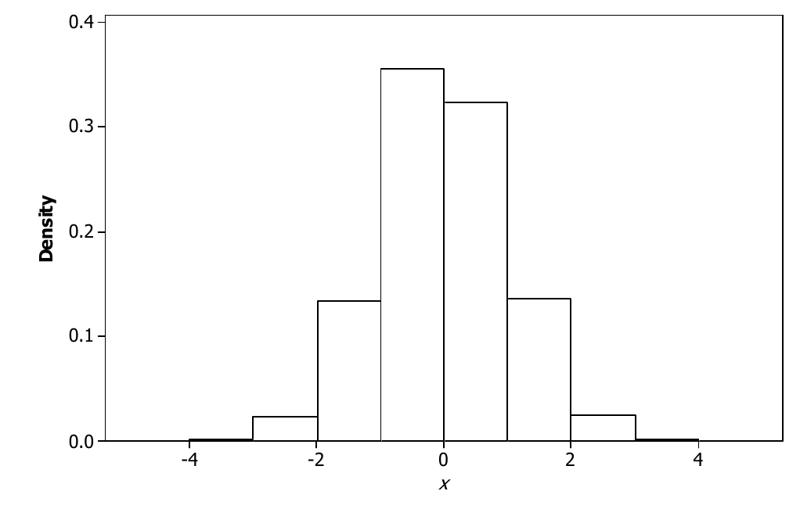
Se \(x \in (h_i, h_{i+1}]\), então \(h_X(x)(h_{i+1} - h_i)\) dá a proporção de indivíduos da população cuja medição \(X(\pi)\) está em \((h_i, h_{i+1}]\). Além disso, temos \[ F_X(h_j) = \int_{-\infty}^{h_j} h_X(x)\, dx \] para cada extremo de intervalo e \[ F_X(h_j) - F_X(h_i) = \int_{h_i}^{h_j} h_X(x)\, dx \] quando \(h_i \le h_j\). Se os intervalos \((h_i, h_{i+1}]\) são pequenos, esperamos que \[ F_X(b) - F_X(a) \approx \int_a^b h_X(x)\, dx \] para qualquer escolha de \(a < b\).
Suponha agora que os comprimentos \(h_{i+1} - h_i\) são pequenos e que \(N\) é muito grande. Então faz sentido imaginar uma função suave e contínua \(f_X\), por exemplo, talvez uma função densidade normal ou gama, que aproxima \(h_X\) no sentido de que \[ \int_a^b f_X(x)\, dx \approx \int_a^b h_X(x)\, dx \] para todo \(a < b\). Então teremos também \[ \int_a^b f_X(x)\, dx \approx F_X(b) - F_X(a) \] para todo \(a < b\). Chamaremos tal \(f_X\) de função densidade da distribuição populacional.
Em essência, é assim que muitas distribuições contínuas surgem na prática. Na Figura 5.4.2, traçamos um histograma de densidade para os mesmos valores usados na Figura 5.4.1, mas desta vez usamos os extremos de intervalo \(h_1 = -5, h_2 = -4{,}75, \ldots, h_{41} = 5\). Notamos que a Figura 5.4.2 se parece muito mais com uma função contínua do que a Figura 5.4.1.
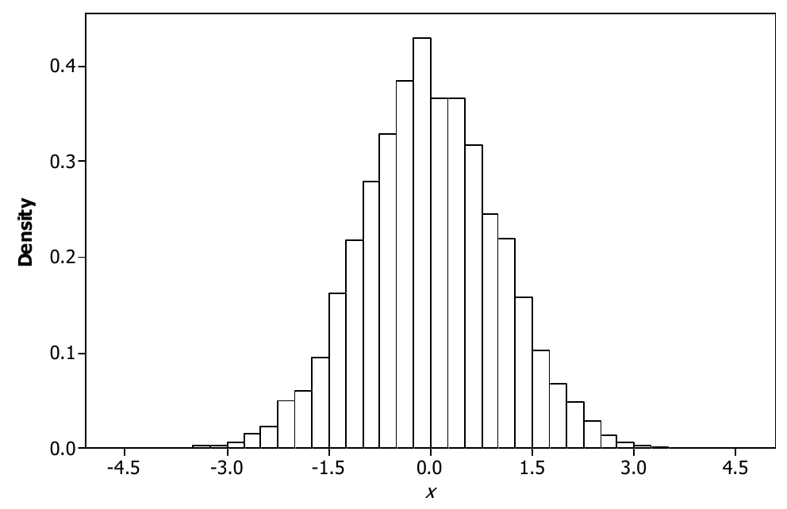
5.4.4 Amostragem por Levantamento
A amostragem de populações finitas fornece a formulação de uma aplicação muito importante da estatística, a saber, a amostragem por levantamento34 ou pesquisa de opinião. Em geral, um levantamento consiste num conjunto de perguntas feitas a uma amostra \(\{\pi_1, \ldots, \pi_n\}\) de uma população \(\Pi\). Cada pergunta corresponde a uma medição, de modo que, se há \(m\) perguntas, a resposta de um respondente \(\pi\) é o vetor \(m\)-dimensional \((X_1(\pi), X_2(\pi), \ldots, X_m(\pi))\). Um exemplo muito importante de amostragem por levantamento são as pesquisas eleitorais feitas para prever o resultado de uma votação. Além disso, muitas empresas de bens de consumo realizam extensas pesquisas de mercado para tentar descobrir o que os consumidores querem e, assim, obter informações que possam levar a vendas maiores.
Em geral, a análise dos resultados se interessa não só pelas distribuições populacionais de cada \(X_i\) sobre a população, mas também pelas distribuições populacionais conjuntas. Por exemplo, a função de distribuição acumulada conjunta de \((X_1, X_2)\) é dada por \[ F_{(X_1, X_2)}(x_1, x_2) = \frac{\lvert \{\pi : X_1(\pi) \le x_1, X_2(\pi) \le x_2\} \rvert}{N}, \] isto é, \(F_{(X_1, X_2)}(x_1, x_2)\) é a proporção dos indivíduos da população cuja medição \(X_1\) não passa de \(x_1\) e cuja medição \(X_2\) não passa de \(x_2\). É claro que podemos também definir as distribuições conjuntas de três ou mais medições. Essas distribuições conjuntas são o que usamos para responder a perguntas como: há relação entre \(X_1\) e \(X_2\) e, se houver, que forma ela assume? Esse tema será discutido extensamente no Capítulo 10. Podemos também definir \(f_{(X_1, X_2)}\) para a distribuição conjunta35, e histogramas de densidade conjuntos são de novo úteis quando \(X_1\) e \(X_2\) são ambas variáveis quantitativas contínuas.
Suponha que há quatro candidatos concorrendo a prefeito de certa cidade. Uma amostra aleatória de 1000 eleitores é selecionada; cada um deles é perguntado se vai votar e, em caso afirmativo, em qual dos quatro candidatos vai votar. Além disso, pergunta-se a idade dos respondentes. Denotamos a resposta à pergunta sobre se vão ou não votar por \(X_1\), com \(X_1(\pi) = 1\) significando sim e \(X_1(\pi) = 0\) significando não. Para os que vão votar, denotamos por \(X_2\) a resposta sobre o candidato em quem vão votar, com \(X_2(\pi) = i\) indicando o candidato \(i\). Por fim, a idade do respondente, em anos, é denotada por \(X_3\). Além das distribuições de \(X_1\) e \(X_2\), o pesquisador também se interessa pelas distribuições conjuntas de \((X_1, X_3)\) e \((X_2, X_3)\), pois elas nos informam sobre a relação entre a participação dos eleitores e a idade, no primeiro caso, e entre a escolha de candidato e a idade, no segundo.
Há muitos aspectos interessantes e importantes da amostragem por levantamento que vão bem além deste livro. Por exemplo, muitas vezes acontece, em populações humanas, que uma pessoa selecionada ao acaso não responda a um levantamento. Isso se chama erro de não resposta36, e é um efeito de seleção sério. Quem faz a amostragem precisa planejar o estudo com cuidado para tentar atenuar os efeitos do erro de não resposta. Além disso, há variantes da amostragem aleatória simples (veja o Desafio 5.4.20) que podem ser preferíveis em certos contextos, pois aumentam a precisão dos resultados. O desenho do questionário usado também é muito importante, pois precisamos garantir que as respostas tratem das questões pretendidas sem enviesar os resultados.
Resumo da Seção 5.4
- A amostragem aleatória simples de uma população \(\Pi\) significa que selecionamos ao acaso um subconjunto de tamanho \(n\) de \(\Pi\) de modo que cada subconjunto de \(n\) elementos tenha a mesma probabilidade — a saber, \(1/\binom{\lvert \Pi \rvert}{n}\) — de ser selecionado.
- Os dados que surgem de um estudo amostral são gerados pela distribuição da medição de interesse \(X\) sobre a população \(\Pi\) inteira, e não sobre alguma subpopulação. É por isso que estudos amostrais são preferíveis a estudos observacionais.
- Quando o tamanho da amostra \(n\) é pequeno em relação a \(\lvert \Pi \rvert\), podemos tratar os valores observados de \(X\) como uma amostra da distribuição de \(X\) sobre a população.
Exercícios
5.4.1 Suponha que temos uma população \(\Pi = \{\pi_1, \ldots, \pi_{10}\}\) e a medição quantitativa \(X\) dada por:
| \(i\) | 1 | 2 | 3 | 4 | 5 | 6 | 7 | 8 | 9 | 10 |
|---|---|---|---|---|---|---|---|---|---|---|
| \(X(\pi_i)\) | 1 | 1 | 2 | 1 | 2 | 3 | 3 | 1 | 2 | 4 |
Calcule \(F_X\), \(f_X\), \(\mu_X\) e \(\sigma_X^2\).
5.4.2 Suponha que você toma uma amostra de \(n = 3\) (sem reposição) da população do Exercício 5.4.1. (a) Você pode considerar isso uma amostra aproximadamente i.i.d. da distribuição populacional? Por quê?(b) Explique como você faria fisicamente a amostragem da população nesse caso. (Sugestão: Tabela D.1.)(c) Usando o método que você descreveu na parte (b), gere três amostras de tamanho \(n = 3\) e calcule \(\bar{X}\) para cada amostra.
5.4.3 Suponha que você toma uma amostra de \(n = 4\) (com reposição) da população do Exercício 5.4.1. (a) Você pode considerar isso uma amostra aproximadamente i.i.d. da distribuição populacional? Por quê?(b) Explique como você faria fisicamente a amostragem nesse caso.(c) Usando o método que você descreveu na parte (b), gere três amostras de tamanho \(n = 3\)37 e calcule \(\bar{X}\) para cada amostra.
5.4.4 Suponha que temos uma população finita \(\Pi\) e uma medição \(X : \Pi \to \{0, 1\}\), em que \(\lvert \Pi \rvert = N\) e \(\lvert \{\pi : X(\pi) = 0\} \rvert = a\). (a) Determine \(f_X(0)\) e \(f_X(1)\). Você consegue identificar essa distribuição populacional?(b) Para uma amostra aleatória simples de tamanho \(n\), determine a probabilidade de que \(n\hat{f}_X(0) = x\).(c) Sob a suposição de amostragem i.i.d., determine a probabilidade de que \(n\hat{f}_X(0) = x\).
5.4.5 Suponha que a seguinte amostra de tamanho \(n = 20\) é obtida de um processo industrial.
| 3,9 | 7,2 | 6,9 | 4,5 | 5,8 | 3,7 | 4,4 | 4,5 | 5,6 | 2,5 |
|---|---|---|---|---|---|---|---|---|---|
| 4,8 | 8,5 | 4,3 | 1,2 | 2,3 | 3,1 | 3,4 | 4,8 | 1,8 | 3,7 |
(a) Construa um histograma de densidade para esse conjunto de dados usando os intervalos \((1; 4{,}5]\), \((4{,}5; 5{,}5]\), \((5{,}5; 6{,}5]\), \((6{,}5; 10]\).(b) Construa um histograma de densidade para esse conjunto de dados usando os intervalos \((1; 3{,}5]\), \((3{,}5; 4{,}5]\), \((4{,}5; 6{,}5]\), \((6{,}5; 10]\).(c) Com base nos resultados das partes (a) e (b), o que você conclui sobre histogramas?
5.4.6 Suponha que se sabe que, numa população de 1000 alunos, 350 alunos vão votar no partido \(A\), 550 alunos vão votar no partido \(B\) e os alunos restantes vão votar no partido \(C\). (a) Explique como tal informação pode ser obtida.(b) Se tomamos \(X : \Pi \to \{A, B, C\}\) tal que \(X(\pi)\) é o partido em que \(\pi\) vai votar, explique por que não podemos representar a distribuição populacional de \(X\) por \(F_X\).(c) Calcule \(f_X\).(d) Explique como se poderia estimar \(f_X\) antes da eleição.(e) O que há de irrealista na distribuição populacional especificada por \(f_X\)? (Sugestão: isso parece realista, com base no que você sabe sobre o comportamento dos eleitores?)
5.4.7 Considere a população \(\Pi\) como os arquivos armazenados num computador num certo momento. Suponha que \(X(\pi)\) é o tipo do arquivo, conforme indicado por sua extensão, por exemplo, .mp3. \(X\) é uma variável categórica ou quantitativa?
5.4.8 Suponha que lhe pedem para estimar a proporção de alunos de uma faculdade de 15.000 alunos que pretendem trabalhar durante as férias de verão. (a) Identifique a população \(\Pi\), a variável \(X\) e \(f_X\). Que tipo de variável é \(X\)?(b) Como você poderia determinar \(f_X\) exatamente?(c) Por que você poderia não conseguir determinar \(f_X\) exatamente? Proponha um procedimento para estimar \(f_X\) nessa situação.(d) Suponha que lhe pediram também para estimar a proporção de alunos que pretendiam trabalhar mas não conseguiram encontrar emprego. Repita as partes (a), (b) e (c) para essa situação.
5.4.9 Às vezes, os participantes de uma pesquisa de opinião não respondem com sinceridade a uma pergunta. Por exemplo, alunos a quem se pergunta “Você já baixou música ilegalmente?” podem não responder com sinceridade, mesmo que tenham a garantia de que suas respostas são confidenciais. Suponha que uma amostra aleatória simples de alunos foi escolhida numa faculdade e que essa pergunta foi feita aos alunos. (a) Se a pergunta foi feita aos alunos por uma pessoa, comente como você acha que os resultados do estudo amostral seriam afetados.(b) Se os alunos puderam responder anonimamente, talvez enviando um questionário pelo correio, comente como você acha que os resultados seriam afetados.(c) Uma técnica para lidar com o viés do respondente induzido por tais perguntas é fazer os alunos responderem com sinceridade apenas quando ocorre certo evento aleatório. Por exemplo, poderíamos pedir a um aluno que lance uma moeda honesta três vezes e minta sempre que obtiver duas caras. Qual é a probabilidade de que um aluno diga a verdade? Depois de concluir o estudo e registrar a proporção de alunos que disseram ter trapaceado, que proporção você registraria como sua estimativa da proporção de alunos que de fato trapacearam?
5.4.10 Uma empresa de pesquisa de mercado é contratada para determinar quão satisfeitos os proprietários estão com a compra de um carro novo nos últimos 6 meses. A satisfação deve ser medida pelos respondentes escolhendo um ponto numa escala de sete pontos \(\{1, 2, 3, 4, 5, 6, 7\}\), em que 1 indica completamente insatisfeito e 7 indica completamente satisfeito (tal escala é comumente chamada de escala Likert). (a) Identifique \(\Pi\), a variável \(X\) e \(f_X\).(b) É comum tratar uma variável como \(X\) como uma variável quantitativa. Você acha que isso está correto? Seria correto tratar \(X\) como uma variável categórica?(c) Uma crítica comum ao uso de tal escala é que a interpretação de uma afirmação como \(3 = {}\)“estou um pouco insatisfeito” varia de uma pessoa para outra. Comente como isso afeta a validade do estudo.
Exercícios computacionais
5.4.11 Gere uma amostra de 1000 da distribuição \(N(3, 2)\). (a) Calcule \(\hat{F}_X\) para essa amostra.(b) Trace um histograma de densidade baseado nesses dados usando os intervalos de comprimento 1 na faixa \((-5, 10)\).(c) Trace um histograma de densidade baseado nesses dados usando os intervalos de comprimento \(0{,}1\) na faixa \((-5, 10)\).(d) Comente a diferença na aparência dos histogramas das partes (b) e (c). A que você atribui isso?(e) O que limita o tamanho dos intervalos que usamos para agrupar as observações quando traçamos histogramas?
5.4.12 Suponha que temos uma população de 10.000 elementos, cada um com um rótulo único do conjunto \(\{1, 2, 3, \ldots, 10.000\}\). (a) Gere uma amostra de 500 rótulos dessa população usando amostragem aleatória simples.(b) Gere uma amostra de 500 rótulos dessa população usando amostragem i.i.d.
Problemas
5.4.13 Suponha que temos uma população finita \(\Pi\) e uma medição \(X : \Pi \to \{0, 1, 2\}\), em que \(\lvert \Pi \rvert = N\), \(\lvert \{\pi : X(\pi) = 0\} \rvert = a\) e \(\lvert \{\pi : X(\pi) = 1\} \rvert = b\). Este problema generaliza o Exercício 5.4.4. (a) Determine \(f_X(0)\), \(f_X(1)\) e \(f_X(2)\).(b) Para uma amostra aleatória simples de tamanho \(n\), determine a probabilidade de que \(\hat{f}_X(0) = f_0\), \(\hat{f}_X(1) = f_1\) e \(\hat{f}_X(2) = f_2\).(c) Sob a suposição de amostragem i.i.d., determine a probabilidade de que \(\hat{f}_X(0) = f_0\), \(\hat{f}_X(1) = f_1\) e \(\hat{f}_X(2) = f_2\).
5.4.14 Suponha que \(X\) é uma medição quantitativa definida numa população finita. (a) Prove que a média populacional é igual a \(\mu_X = \sum_x x f_X(x)\), isto é, que a média de \(X(\pi)\) sobre todos os elementos \(\pi\) da população é igual a \(\mu_X\).(b) Prove que a variância populacional é dada por \(\sigma_X^2 = \sum_x (x - \mu_X)^2 f_X(x)\), isto é, que a média de \((X(\pi) - \mu_X)^2\) sobre todos os elementos \(\pi\) da população é igual a \(\sigma_X^2\).
5.4.15 Suponha que temos a situação descrita no Exercício 5.4.4 e que tomamos uma amostra aleatória simples de tamanho \(n\) de \(\Pi\), em que \(\lvert \Pi \rvert = N\). (a) Prove que a média de \(\hat{f}_X(0)\) é dada por \(f_X(0)\). (Sugestão: note que podemos escrever \(\hat{f}_X(0)\) \({}= n^{-1} \sum_{i=1}^{n} I_{\{0\}}(X(\pi_i))\) e \(I_{\{0\}}(X(\pi_i)) \sim \text{Bernoulli}(f_X(0))\).)(b) Prove que a variância de \(\hat{f}_X(0)\) é dada por \begin{equation} \frac{f_X(0)(1 - f_X(0))}{n} \, \frac{N - n}{N - 1}. \tag{5.4.1} \end{equation} (Sugestão: use a sugestão da parte (a), mas note que os \(I_{\{0\}}(X(\pi_i))\) não são independentes. Use o Teorema 3.3.4(b) e calcule \(\Cov\bigl(I_{\{0\}}(X(\pi_i)), I_{\{0\}}(X(\pi_i))\bigr)\)38 em termos de \(f_X(0)\).)(c) Repita as contas das partes (a) e (b), mas desta vez suponha que você toma uma amostra de \(n\) com reposição. (Sugestão: use o Exercício 5.4.4(c).)(d) Explique por que o fator \((N - n)/(N - 1)\) em (5.4.1) é chamado de fator de correção para população finita39.
5.4.16 Suponha que temos uma população finita \(\Pi\) e que não conhecemos \(\lvert \Pi \rvert = N\). Além disso, suponha que temos uma variável de medição \(X : \Pi \to \{0, 1\}\) e que sabemos que \(Nf_X(0) = a\), em que \(a\) é conhecido. Com base numa amostra aleatória simples de \(n\) elementos de \(\Pi\), determine um estimador de \(N\). (Sugestão: use uma função de \(\hat{f}_X(0)\).)
5.4.17 Suponha que \(X\) é uma variável quantitativa definida numa população \(\Pi\) e que tomamos uma amostra aleatória simples de tamanho \(n\) de \(\Pi\). (a) Se estimamos a média populacional \(\mu_X\) pela média amostral \(\bar{X} = \frac{1}{n} \sum_{i=1}^{n} X(\pi_i)\), prove que \(E(\bar{X}) = \mu_X\), em que \(\mu_X\) é definida no Problema 5.4.14(a). (Sugestão: qual é a distribuição de cada \(X(\pi_i)\)?)(b) Sob a suposição de que a amostragem i.i.d. faz sentido, mostre que a variância de \(\bar{X}\) é igual a \(\sigma_X^2/n\), em que \(\sigma_X^2\) é definida no Problema 5.4.14(b).
5.4.18 Suponha que temos uma população finita \(\Pi\) e que não conhecemos \(\lvert \Pi \rvert = N\). Além disso, suponha que temos uma variável de medição \(X : \Pi \to R^1\) e que conhecemos \(T = \sum_\pi X(\pi)\). Com base numa amostra aleatória simples de \(n\) elementos de \(\Pi\), determine um estimador de \(N\). (Sugestão: use uma função de \(\bar{X}\).)
5.4.19 Sob amostragem i.i.d., prove que \(\hat{f}_X(x) \xrightarrow{D} f_X(x)\) quando \(n \to \infty\). (Sugestão: \(\hat{f}_X(x)\) \({}= n^{-1} \sum_{i=1}^{n} I_{\{x\}}(X(\pi_i))\).)
Desafios
5.4.20 (Amostragem estratificada40) Suponha que \(X\) é uma variável quantitativa definida numa população \(\Pi\) e que podemos particionar \(\Pi\) em duas subpopulações \(\Pi_1\) e \(\Pi_2\), de modo que uma proporção \(p\) da população inteira esteja em \(\Pi_1\). Seja \(f_{iX}\) a distribuição populacional condicional de \(X\) em \(\Pi_i\). (a) Prove que \(f_X(x) = p f_{1X}(x) + (1 - p) f_{2X}(x)\).(b) Estabeleça que \(\mu_X = p\mu_{1X} + (1 - p)\mu_{2X}\), em que \(\mu_{iX}\) é a média de \(X\) em \(\Pi_i\).(c) Estabeleça que \(\sigma_X^2 = p\sigma_{1X}^2\) \({}+ (1 - p)\sigma_{2X}^2\) \({}+ p(1 - p)(\mu_{1X} - \mu_{2X})^2\).(d) Suponha que faz sentido supor amostragem i.i.d. sempre que tomamos uma amostra da população inteira ou de qualquer uma das subpopulações, isto é, sempre que os tamanhos de amostra que estamos considerando são pequenos em relação aos tamanhos dessas populações. Implementamos a amostragem estratificada tomando uma amostra aleatória simples de tamanho \(n_i\) da subpopulação \(\Pi_i\). Estimamos então \(\mu_X\) por \(p\bar{X}_1 + (1 - p)\bar{X}_2\), em que \(\bar{X}_i\) é a média amostral baseada na amostra de \(\Pi_i\). Prove que \(E(p\bar{X}_1 + (1 - p)\bar{X}_2) = \mu_X\) e \[ \Var\bigl(p\bar{X}_1 + (1 - p)\bar{X}_2\bigr) = p^2 \frac{\sigma_{1X}^2}{n_1} + (1 - p)^2 \frac{\sigma_{2X}^2}{n_2}. \](e) Sob as suposições da parte (d), prove que \[ \Var\bigl(p\bar{X}_1 + (1 - p)\bar{X}_2\bigr) \le \Var\bigl(\bar{X}\bigr) \] quando \(\bar{X}\) se baseia numa amostra aleatória simples de tamanho \(n\) da população inteira e \(n_1 = pn\), \(n_2 = (1 - p)n\). Isso se chama amostragem estratificada proporcional.(f) Em que condições não há benefício na amostragem estratificada proporcional? O que você conclui sobre as situações em que a amostragem estratificada será mais benéfica?
Tópicos para discussão
5.4.21 Às vezes, argumenta-se que um profissional habilidoso consegue escolher, de forma determinística, uma amostra representativa de uma população mais precisa do que empregando a amostragem aleatória simples. Esse argumento se baseia, em parte, no argumento de que, com a amostragem aleatória simples, é sempre possível obter, por puro acaso, uma amostra muito pouco representativa, e que isso pode ser evitado por um especialista. Comente essa afirmação.
5.4.22 Suponha que se afirma que uma medição quantitativa \(X\) definida numa população finita \(\Pi\) tem distribuição aproximadamente normal, com média desconhecida e variância desconhecida. Explique detalhadamente o que essa afirmação significa.
5.5 Algumas Inferências Básicas
Suponha agora que estamos numa situação que envolve uma medição \(X\), cuja distribuição é desconhecida, e que obtivemos os dados \((x_1, x_2, \ldots, x_n)\), isto é, observamos \(n\) valores de \(X\). Espera-se que esses dados tenham resultado de uma amostragem aleatória simples, mas talvez eles tenham sido coletados como parte de um estudo observacional. Denote por \(f_X\) a função de frequência relativa populacional desconhecida associada, ou uma densidade que a aproxime, e por \(F_X\) a função de distribuição populacional.
O que fazemos agora com os dados depende de duas coisas. Primeiro, temos de determinar o que queremos saber sobre a distribuição populacional subjacente. Tipicamente, nosso interesse está em apenas algumas características dessa distribuição — a média e a variância. Segundo, temos de usar a teoria estatística para combinar os dados com o modelo estatístico e fazer inferências sobre as características de interesse.
Discutimos agora algumas características de interesse típicas e apresentamos alguns métodos informais de estimação41 dessas características, conhecidos como estatísticas descritivas. Elas costumam ser usadas como um passo preliminar antes de se tirarem inferências mais formais e se justificam por razões intuitivas simples. São chamadas de descritivas porque estimam quantidades que descrevem aspectos da distribuição subjacente.
5.5.1 Estatísticas Descritivas
Os estatísticos muitas vezes se concentram em várias características das distribuições. Apresentamos algumas delas nos exemplos a seguir.
Muitas vezes queremos fazer inferências sobre o valor \(f_X(x)\) ou o valor \(F_X(x)\) para um \(x\) específico. Lembre que \(f_X(x)\) é a proporção de membros da população cuja medição \(X\) é igual a \(x\). Em geral, \(F_X(x)\) é a proporção de membros da população cuja medição \(X\) é menor ou igual a \(x\).
Suponha agora que temos uma amostra \((x_1, x_2, \ldots, x_n)\) de \(f_X\). Uma estimativa natural de \(f_X(x)\) é dada por \(\hat{f}_X(x)\), a proporção de valores amostrais iguais a \(x\). Uma estimativa natural de \(F_X(x)\) é dada por \(\hat{F}_X(x)\) \({}= n^{-1} \sum_{i=1}^{n} I_{(-\infty, x]}(x_i)\), a proporção de valores amostrais menores ou iguais a \(x\), também conhecida como a função de distribuição empírica avaliada em \(x\).
Suponha que obtivemos a seguinte amostra de \(n = 10\) valores.
| \(1{,}2\) | \(2{,}1\) | \(0{,}4\) | \(3{,}3\) | \(-2{,}1\) | \(4{,}0\) | \(-0{,}3\) | \(2{,}2\) | \(1{,}5\) | \(5{,}0\) |
|---|
Nesse caso, \(\hat{f}_X(x) = 0{,}1\) sempre que \(x\) é um valor dos dados, e vale \(0\) caso contrário. Para calcular \(\hat{F}_X(x)\), basta contar quantos valores amostrais são menores ou iguais a \(x\) e dividir por \(n = 10\). Por exemplo, \(\hat{F}_X(-3) = 0/10 = 0\), \(\hat{F}_X(0) = 2/10 = 0{,}2\) e \(\hat{F}_X(4) = 9/10 = 0{,}9\).
Uma classe importante de características da distribuição de uma variável quantitativa \(X\) é dada pela definição a seguir.
Para \(p \in [0, 1]\), o \(p\)-ésimo quantil (ou \(100p\)-ésimo percentil) \(x_p\) da distribuição com fda \(F_X\) é definido como o menor número \(x_p\) que satisfaz \(p \le F_X(x_p)\).
Por exemplo, se a sua nota numa prova o colocou no 90º percentil, então sua nota é igual a \(x_{0{,}9}\) e 90% dos colegas que fizeram a prova tiraram a sua nota ou menos. Observe que, pela definição da função de distribuição acumulada inversa (Definição 2.10.1), podemos escrever \(x_p = F_X^{-1}(p) = \min\{x : p \le F_X(x)\}\).
Quando \(F_X\) é estritamente crescente42 e contínua, \(F_X^{-1}(p)\) é o único valor \(x_p\) que satisfaz \begin{equation} F_X(x_p) = p. \tag{5.5.1} \end{equation} A Figura 5.5.1 ilustra a situação em que há uma única solução de (5.5.1). Quando \(F_X\) não é estritamente crescente ou não é contínua (como quando \(X\) é discreta), pode haver mais de uma solução de (5.5.1), ou nenhuma. A Figura 5.5.2 ilustra a situação em que não há solução de (5.5.1).
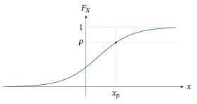
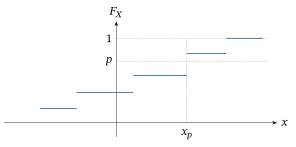
Assim, quando \(X\) é uma medição contínua, uma proporção \(p\) da população tem sua medição \(X\) menor ou igual a \(x_p\). Como casos particulares, \(x_{0{,}5} = F_X^{-1}(0{,}5)\) é a mediana, enquanto \(x_{0{,}25} = F_X^{-1}(0{,}25)\) e \(x_{0{,}75} = F_X^{-1}(0{,}75)\) são, respectivamente, o primeiro e o terceiro quartis da distribuição.
Uma estimativa natural de um quantil populacional \(x_p = F_X^{-1}(p)\) é usar \(\hat{x}_p = \hat{F}_X^{-1}(p)\). Observe, porém, que \(\hat{F}_X\) não é contínua, de modo que pode não haver solução de (5.5.1) usando \(\hat{F}_X\).
Aplicar a Definição 5.5.1, porém, leva à estimativa a seguir. Primeiro, ordene os valores amostrais observados \((x_1, \ldots, x_n)\) para obter as estatísticas de ordem43 \(x_{(1)} < \cdots < x_{(n)}\) (ver Seção 2.8.4). Depois, observe que \(x_{(i)}\) é o \((i/n)\)-ésimo quantil da distribuição empírica, porque \[ \hat{F}_X(x_{(i)}) = \frac{i}{n} \] e \(\hat{F}_X(x) < i/n\) sempre que \(x < x_{(i)}\). Em geral, temos que o \(p\)-ésimo quantil amostral é \(\hat{x}_p = x_{(i)}\) sempre que \begin{equation} \frac{i - 1}{n} < p \le \frac{i}{n}. \tag{5.5.2} \end{equation}
Algumas modificações dessa estimativa são usadas às vezes. Por exemplo, se encontrarmos \(i\) tal que (5.5.2) seja satisfeita e pusermos \begin{equation} \tilde{x}_p = x_{(i-1)} + n\bigl(x_{(i)} - x_{(i-1)}\bigr)\left(p - \frac{i - 1}{n}\right), \tag{5.5.3} \end{equation} então \(\tilde{x}_p\) é a interpolação linear entre \(x_{(i-1)}\) e \(x_{(i)}\). Quando \(n\) é par, essa definição dá a mediana amostral44 como \(\tilde{x}_{0{,}5} = x_{(n/2)}\); uma fórmula parecida vale quando \(n\) é ímpar (Problema 5.5.21). Veja também o Problema 5.5.22 para mais discussão sobre (5.5.3).
Com bastante frequência, a mediana amostral é definida como \begin{equation} \check{x}_{0{,}5} = \begin{cases} x_{((n+1)/2)} & n \text{ ímpar} \\[1ex] \frac{1}{2}\bigl(x_{(n/2)} + x_{(n/2+1)}\bigr) & n \text{ par,} \end{cases} \tag{5.5.4} \end{equation} isto é, o valor do meio quando \(n\) é ímpar e a média dos dois valores do meio quando \(n\) é par. Para \(n\) grande o bastante, todas essas definições dão respostas parecidas. Qualquer uma delas pode ser usada numa aplicação.
Considere os dados do Exemplo 5.5.1. Ordenando os dados do menor para o maior, as estatísticas de ordem são dadas pela tabela a seguir.
| \(x_{(1)} = -2{,}1\) | \(x_{(2)} = -0{,}3\) | \(x_{(3)} = 0{,}4\) | \(x_{(4)} = 1{,}2\) | \(x_{(5)} = 1{,}5\) |
|---|---|---|---|---|
| \(x_{(6)} = 2{,}1\) | \(x_{(7)} = 2{,}2\) | \(x_{(8)} = 3{,}3\) | \(x_{(9)} = 4{,}0\) | \(x_{(10)} = 5{,}0\) |
Então, usando (5.5.3), a mediana amostral é dada por \(\tilde{x}_{0{,}5} = x_{(5)} = 1{,}5\), enquanto os quartis amostrais45 são dados por \begin{align*} \tilde{x}_{0{,}25} &= x_{(2)} + 10\bigl(x_{(3)} - x_{(2)}\bigr)(0{,}25 - 0{,}2) \\ &= -0{,}3 + 10\,(0{,}4 - (-0{,}3))\,(0{,}25 - 0{,}2) = 0{,}05 \end{align*} e \begin{align*} \tilde{x}_{0{,}75} &= x_{(7)} + 10\bigl(x_{(8)} - x_{(7)}\bigr)(0{,}75 - 0{,}7) \\ &= 2{,}2 + 10\,(3{,}3 - 2{,}2)\,(0{,}75 - 0{,}7) = 2{,}75. \end{align*} Assim, nesse caso, estimamos que 25% da população em estudo tem medição \(X\) menor que \(0{,}05\) etc.
Muitas vezes nos pedem para fazer inferências sobre o valor da média populacional \[ \mu_X = \frac{1}{\lvert\Pi\rvert} \sum_{\pi \in \Pi} X(\pi) \] e da variância populacional \[ \sigma_X^2 = \frac{1}{\lvert\Pi\rvert} \sum_{\pi \in \Pi} \bigl(X(\pi) - \mu_X\bigr)^2, \] em que \(\Pi\) é uma população finita e \(X\) é uma medição a valores reais definida sobre ela. Elas são, respectivamente, medidas da posição e da dispersão da distribuição populacional em torno da média. Observe que calcular uma média ou uma variância só faz sentido quando \(X\) é uma variável quantitativa.
Quando \(X\) é discreta, podemos também escrever \[ \mu_X = \sum_{x} x f_X(x) \] porque \(\lvert\Pi\rvert f_X(x)\) é igual ao número de elementos \(\pi \in \Pi\) com \(X(\pi) = x\). No caso contínuo, usando uma densidade aproximada \(f_X\), podemos escrever \[ \mu_X \approx \int_{-\infty}^{\infty} x f_X(x)\, dx. \] Existem fórmulas parecidas para a variância populacional de \(X\) (ver Problema 5.4.14).
Provavelmente lhe ocorrerá que uma estimativa natural da média populacional \(\mu_X\) é dada pela média amostral \[ \bar{x} = \frac{1}{n} \sum_{i=1}^{n} x_i. \] Do mesmo modo, uma estimativa natural da variância populacional \(\sigma_X^2\) é dada pela variância amostral \begin{equation} s^2 = \frac{1}{n - 1} \sum_{i=1}^{n} (x_i - \bar{x})^2. \tag{5.5.5} \end{equation} Mais adiante explicaremos por que dividimos por \(n - 1\) em (5.5.5), e não por \(n\). Na verdade, faz pouca diferença qual usamos, mesmo para valores modestos de \(n\). O desvio padrão amostral é dado por \(s\), a raiz quadrada positiva de \(s^2\). Para os dados do Exemplo 5.1.1, obtemos \(\bar{x} = 1{,}73\) e \(s = 2{,}097\).46
A média populacional \(\mu_X\) e o desvio padrão populacional \(\sigma_X\) funcionam como um par, em que \(\mu_X\) mede onde a distribuição está localizada na reta real e \(\sigma_X\) mede quanta dispersão há na distribuição em torno de \(\mu_X\). Claramente, quanto maior o valor de \(\sigma_X\), mais variabilidade há na distribuição.
Alternativamente, poderíamos usar a mediana populacional \(x_{0{,}5}\) como medida de posição da distribuição e a amplitude interquartil47 populacional \(x_{0{,}75} - x_{0{,}25}\) como medida da quantidade de variabilidade na distribuição em torno da mediana. A mediana e a amplitude interquartil são a escolha preferida para medir esses aspectos da distribuição sempre que a distribuição é assimétrica, isto é, não simétrica. Isso porque a mediana é insensível a valores muito extremos, enquanto a média não é. Por exemplo, sabe-se bem que os preços dos imóveis numa região apresentam uma distribuição assimétrica à direita. Umas poucas casas vendidas por preços muito altos não mudam o preço mediano, mas podem provocar uma grande mudança no preço médio.
Quando temos uma distribuição simétrica, a média e a mediana coincidem (desde que a média exista). Quanto maior a assimetria48 de uma distribuição, porém, maior será a discrepância entre sua média e sua mediana. Por exemplo, na Figura 5.5.3 traçamos o gráfico da densidade de uma distribuição \(\chi^2(4)\). Essa distribuição é assimétrica à direita, e a média é \(4\), enquanto a mediana é \(3{,}3567\).
Estimamos a amplitude interquartil populacional pela amplitude interquartil amostral (IQR), dada por \(I\hat{Q}R = \tilde{x}_{0{,}75} - \tilde{x}_{0{,}25}\). Para os dados do Exemplo 5.5.1, obtemos a mediana amostral \(\tilde{x}_{0{,}5} = 1{,}5\), enquanto \(I\hat{Q}R = 2{,}75 - 0{,}05 = 2{,}70\).
Se mudarmos o maior valor da amostra de \(x_{(10)} = 5{,}0\) para \(x_{(10)} = 500{,}0\), a mediana amostral continua \(\tilde{x}_{0{,}5} = 1{,}5\), mas observe que a média amostral vai de \(1{,}73\) para \(51{,}23\)!
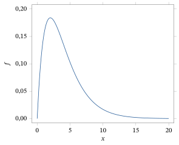
5.5.2 Gráficos dos Dados
É sempre uma boa ideia fazer o gráfico dos dados. Para variáveis quantitativas discretas, podemos fazer o gráfico de \(\hat{f}_X\), isto é, das proporções amostrais (frequências relativas). Para variáveis quantitativas contínuas, apresentamos o histograma de densidade na Seção 5.4.3. Esses gráficos nos dão alguma ideia da forma da distribuição da qual estamos amostrando. Por exemplo, podemos ver se há algum indício de que a distribuição seja fortemente assimétrica.
Consideramos agora outro gráfico muito útil para variáveis quantitativas.
Outro gráfico útil para variáveis quantitativas é conhecido como boxplot. Por exemplo, a Figura 5.5.4 mostra um boxplot dos dados do Exemplo 5.5.1. A linha no centro da caixa é a mediana. A linha abaixo da mediana é o primeiro quartil, e a linha acima da mediana é o terceiro quartil.
As linhas verticais que saem dos quartis são chamadas de bigodes e vão dos quartis até os valores adjacentes. Os valores adjacentes são dados pelo maior valor menor ou igual ao limite superior (o terceiro quartil mais \(1{,}5\) vez o \(I\hat{Q}R\)) e pelo menor valor maior ou igual ao limite inferior (o primeiro quartil menos \(1{,}5\) vez o \(I\hat{Q}R\)). Valores além dos valores adjacentes, quando existem, são marcados com um \(*\); neste caso, não há nenhum. Se mudarmos \(x_{(10)} = 5{,}0\) para \(x_{(10)} = 15{,}0\), porém, vemos esse valor extremo marcado com um \(*\), como mostra a Figura 5.5.5.
Os pontos fora dos limites superior e inferior, e portanto marcados com \(*\), costumam ser chamados de valores atípicos. Um valor atípico50 é um valor extremo em relação ao resto das observações. Às vezes, os valores atípicos ocorrem porque se cometeu um erro ao coletar ou registrar os dados, mas eles também ocorrem simplesmente porque estamos amostrando de uma distribuição de cauda longa. Muitas vezes é difícil saber qual é o caso numa aplicação específica, mas cada uma dessas observações deve ser registrada. Vimos no Exemplo 5.5.3 que valores atípicos podem ter um grande impacto nas análises estatísticas. Seus efeitos devem ser registrados ao relatar os resultados de uma análise estatística.
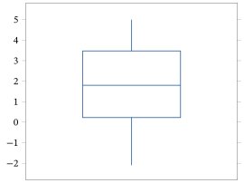
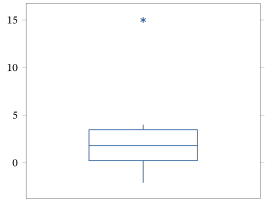
Para variáveis categóricas, é comum fazer o gráfico dos dados num gráfico de barras, como descrito no próximo exemplo.
Para variáveis categóricas, codificamos os valores da variável como números igualmente espaçados e então desenhamos retângulos de largura constante (as barras) sobre esses valores, de modo que a altura do retângulo sobre um valor seja igual à proporção de vezes que esse valor ocorre. Um gráfico assim é chamado de gráfico de barras. Observe que os valores ao longo do eixo \(x\) são apenas rótulos e não devem ser tratados como números com os quais podemos fazer contas etc.
Por exemplo, suponha que tomamos uma amostra aleatória simples de 100 estudantes e registramos o sabor de sorvete favorito de cada um (entre quatro possibilidades), obtendo os resultados dados na tabela a seguir.
| Sabor | Contagem | Proporção |
|---|---|---|
| Chocolate | 42 | 0,42 |
| Baunilha | 28 | 0,28 |
| Caramelo | 22 | 0,22 |
| Morango | 8 | 0,08 |
Codificando Chocolate como 1, Baunilha como 2, Caramelo como 3 e Morango como 4, a Figura 5.5.6 apresenta um gráfico de barras desses dados. É comum que as barras desses gráficos não se toquem.
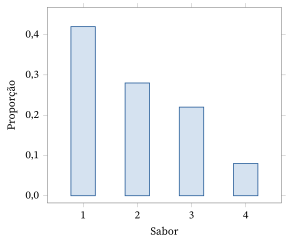
5.5.3 Tipos de Inferências
Certamente, apresentar estatísticas descritivas e fazer gráficos dos dados são métodos que um estatístico usa para tentar aprender algo sobre a distribuição populacional subjacente. Essa abordagem tem dificuldades, porém, pois acabamos de escolher esses métodos com base na intuição. Muitas vezes não está claro quais estatísticas descritivas devemos usar. Além disso, esses resumos dos dados não fazem uso nenhum da informação que temos sobre a verdadeira distribuição populacional, expressa pelo modelo estatístico, a saber, \(f_X \in \{f_\theta : \theta \in \negrito{\Omega}\}\). Levar essa informação em conta nos leva a desenvolver uma teoria da inferência estatística, isto é, a especificar como devemos combinar a informação do modelo com os dados para fazer inferências sobre quantidades populacionais. Faremos isso nos Capítulos 6, 7 e 8, mas antes discutimos os tipos de inferência mais usados nas aplicações.
Na Seção 5.2, discutimos três tipos de inferência no contexto de um modelo de probabilidade conhecido, especificado por alguma função densidade ou função de probabilidade \(f\). Observamos que poderíamos querer fazer qualquer uma das seguintes coisas a respeito de um valor de resposta \(s\) não observado.
(i) Predizer um valor de resposta \(s\) desconhecido por meio de uma predição \(t\).
(ii) Construir um subconjunto \(C\) do espaço amostral \(S\) que tenha alta probabilidade de conter um valor de resposta \(s\) desconhecido.
(iii) Avaliar se \(s_0 \in S\) é ou não um valor plausível da distribuição de probabilidade especificada por \(f\).
Chamamos (i), (ii) e (iii) de inferências sobre o \(s\) não observado. Os exemplos da Seção 5.2 mostram que esses são conceitos intuitivamente razoáveis.
Numa aplicação, não conhecemos \(f\); sabemos apenas que \(f \in \{f_\theta : \theta \in \negrito{\Omega}\}\), e observamos os dados \(s\). Não temos certeza de qual candidata \(f_\theta\) é a correta ou, de modo equivalente, de qual dos valores possíveis de \(\theta\) é o correto.
Como mencionado na Seção 5.5.1, nosso objetivo principal pode ser determinar não a verdadeira \(f_\theta\), mas alguma característica da verdadeira distribuição, como sua média, sua mediana ou o valor da verdadeira função de distribuição \(F\) num valor especificado. Vamos denotar essa característica de interesse por \(\psi(\theta)\). Por exemplo, quando a característica de interesse é a média da verdadeira distribuição de uma variável aleatória contínua, então \[ \psi(\theta) = \int_{-\infty}^{\infty} x f_\theta(x)\, dx. \] Alternativamente, poderíamos estar interessados em \(\psi(\theta) = F_\theta^{-1}(0{,}5)\), a mediana da distribuição de uma variável aleatória com função de distribuição dada por \(F_\theta\).
Valores diferentes de \(\theta\) levam a valores possivelmente diferentes da característica \(\psi(\theta)\). Depois de observar os dados \(s\), queremos fazer inferências sobre qual é o valor correto. Vamos considerar os três tipos de inferência para \(\psi(\theta)\).
(i) Escolher uma estimativa \(T(s)\) de \(\psi(\theta)\), o que chamamos de problema de estimação.
(ii) Construir um subconjunto \(C(s)\) do conjunto de valores possíveis de \(\psi(\theta)\) que acreditamos conter o valor verdadeiro, o que chamamos de problema de construção de uma região de credibilidade51 ou de uma região de confiança52.
(iii) Avaliar se \(\psi_0\) é ou não um valor plausível para \(\psi(\theta)\) depois de observar \(s\), o que chamamos de problema de avaliação de hipóteses53.
Assim, estimativas, regiões de credibilidade ou de confiança e avaliação de hipóteses são exemplos de tipos de inferência. Em particular, queremos construir estimativas \(T(s)\) de \(\psi(\theta)\), construir regiões de credibilidade ou de confiança \(C(s)\) para \(\psi(\theta)\) e avaliar quão plausível é um valor hipotético \(\psi_0\) para \(\psi(\theta)\).
O problema da inferência estatística consiste em determinar como devemos combinar a informação do modelo \(\{f_\theta : \theta \in \negrito{\Omega}\}\) com os dados \(s\) para realizar essas inferências sobre \(\psi(\theta)\).
Um modelo estatístico muito importante nas aplicações é o modelo normal de locação e escala, apresentado no Exemplo 5.3.4. Ilustramos algumas das ideias discutidas nesta seção por meio desse modelo.
Suponha que foi coletada a seguinte amostra aleatória simples das alturas (em polegadas) de 30 estudantes.
| 64,9 | 61,4 | 66,3 | 64,3 | 65,1 | 64,4 | 59,8 | 63,6 | 66,5 | 65,0 |
|---|---|---|---|---|---|---|---|---|---|
| 64,9 | 64,3 | 62,5 | 63,1 | 65,0 | 65,8 | 63,4 | 61,9 | 66,6 | 60,9 |
| 61,6 | 64,0 | 61,5 | 64,2 | 66,8 | 66,4 | 65,8 | 71,4 | 67,8 | 66,3 |
A estatística que analisa os dados acredita que a distribuição das alturas na população pode ser bem aproximada por uma distribuição normal com alguma média e alguma variância desconhecidas, e ela não está disposta a fazer nenhuma suposição adicional sobre a verdadeira distribuição. Assim, o modelo estatístico é dado pela família das distribuições \(N(\mu, \sigma^2)\), em que \(\theta = (\mu, \sigma^2) \in \negrito{\Omega}\) \({}= R^1 \times R^\) \({}+\) é desconhecido.
Esse modelo estatístico faz sentido, isto é, a suposição de normalidade é adequada para essa situação? O histograma de densidade (baseado em 12 intervalos de mesmo comprimento, de 59,5 a 71,5) da Figura 5.5.7 parece normal, de modo bem grosseiro, mas a observação extrema na cauda direita pode ser algum motivo de preocupação. De todo modo, seguimos como se essa suposição fosse razoável. No Capítulo 9, discutiremos métodos mais refinados para avaliar essa suposição.
Suponha que estejamos interessados em fazer inferências sobre a altura média da população, isto é, a característica de interesse é \(\psi(\mu, \sigma^2) = \mu\). Alternativamente, poderíamos querer fazer inferências sobre o 90º percentil dessa distribuição, isto é, \(\psi(\mu, \sigma^2)\) \({}= x_{0{,}90}\) \({}= \mu + \sigma z_{0{,}90}\), em que \(z_{0{,}90}\) é o 90º percentil da distribuição \(N(0, 1)\) (quando \(X \sim N(\mu, \sigma^2)\), então \(P(X \le \mu + \sigma z_{0{,}90})\) \({}= P((X - \mu)/\sigma \le z_{0{,}90})\) \({}= \Phi(z_{0{,}90})\) \({}= 0{,}90\)). Assim, 90% da população em estudo tem altura menor que \(x_{0{,}90}\), um valor que desconhecemos porque não sabemos o valor de \((\mu, \sigma^2)\). Obviamente, há muitas outras características da verdadeira distribuição sobre as quais poderíamos querer fazer inferências.
Usando apenas a intuição, \(T(x_1, \ldots, x_n) = \bar x\) parece uma estimativa sensata de \(\mu\), e \(T(x_1, \ldots, x_n) = \bar x + s z_{0{,}90}\) parece uma estimativa sensata de \(\mu + \sigma z_{0{,}90}\). Para justificar a escolha dessas estimativas, vamos precisar das teorias desenvolvidas nos capítulos seguintes. Neste caso, obtemos \(\bar x = 64{,}517\) e, por (5.5.5), calculamos \(s = 2{,}379\). Da Tabela D.2, obtemos \(z_{0{,}90} = 1{,}2816\), de modo que \[ \bar x + s z_{0{,}90} = 64{,}517 + 2{,}379\,(1{,}2816) = 67{,}566. \]
Quão precisa é a estimativa \(\bar x\) de \(\mu\)? Uma abordagem natural para responder a essa pergunta é construir um intervalo de credibilidade54, baseado na estimativa, que acreditamos ter alta probabilidade de conter o verdadeiro valor de \(\mu\) e que seja o mais curto possível. Por exemplo, a teoria do Capítulo 6 leva a usar intervalos de confiança para \(\mu\) da forma \[ [\bar x - sc, \bar x + sc] \] para alguma escolha da constante \(c\). Observe que \(\bar x\) está no centro do intervalo. A teoria do Capítulo 6 vai mostrar que, neste caso, escolher \(c = 0{,}3734\) leva ao que se conhece como intervalo de confiança55 0,95 para \(\mu\). Tomamos então o semicomprimento56 desse intervalo, a saber, \[ sc = 2{,}379\,(0{,}3734) = 0{,}888, \] como medida da precisão da estimativa \(\bar x = 64{,}517\) de \(\mu\). Neste caso, temos informação suficiente para dizer que conhecemos o verdadeiro valor de \(\mu\) com margem de uma polegada, pelo menos com “confiança” igual a 0,95.
Por fim, suponha que temos um valor hipotético \(\mu_0\) para a altura média da população. Por exemplo, podemos acreditar que a altura média da população de indivíduos em estudo é igual à altura média de outra população, para a qual se sabe que essa quantidade é igual a \(\mu_0 = 65\). Então, com base na amostra de alturas observada, queremos avaliar se o valor \(\mu_0 = 65\) faz sentido ou não. Se a altura média amostral \(\bar x\) estiver longe de \(\mu_0\), isso parece ser evidência contra o valor hipotético. No Capítulo 6, vamos mostrar que podemos basear nossa avaliação no valor de \[ t = \frac{\bar x - \mu_0}{s/\sqrt{n}} = \frac{64{,}517 - 65}{2{,}379/\sqrt{30}} = -1{,}112. \] Se o valor de \(\lvert t\rvert\) for muito grande, concluiremos que temos evidência contra o valor hipotético \(\mu_0 = 65\). Precisamos especificar o que queremos dizer com grande aqui, e faremos isso no Capítulo 6. Acontece que \(t = -1{,}112\) é um valor plausível para \(t\) quando o verdadeiro valor de \(\mu\) é igual a 65, de modo que não temos evidência contra a hipótese.
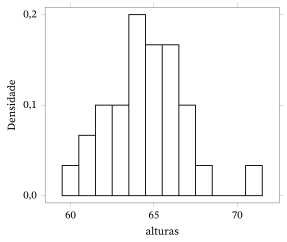
Resumo da Seção 5.5
- Estatísticas descritivas são métodos estatísticos informais usados para fazer inferências sobre a distribuição de uma variável \(X\) de interesse, com base numa amostra observada dessa distribuição. Essas quantidades resumem características da amostra observada e podem ser vistas como estimativas das quantidades populacionais desconhecidas correspondentes. São necessários métodos mais formais para avaliar o erro dessas estimativas, ou mesmo para substituí-las por estimativas de maior precisão.
- É importante fazer gráficos dos dados usando gráficos relevantes. Eles nos dão alguma ideia da forma da distribuição populacional da qual estamos amostrando.
- Há três tipos principais de inferência: estimativas, intervalos de credibilidade ou de confiança e avaliação de hipóteses.
Exercícios
5.5.1 Suponha que os dados a seguir foram obtidos registrando-se \(X\), o número de clientes que chegam a um caixa eletrônico durante 15 intervalos sucessivos de um minuto.
| 2 | 1 | 3 | 2 | 0 | 1 | 4 | 2 |
|---|---|---|---|---|---|---|---|
| 0 | 2 | 3 | 1 | 0 | 0 | 4 |
(a) Registre estimativas de \(f_X(0)\), \(f_X(1)\), \(f_X(2)\), \(f_X(3)\) e \(f_X(4)\).(b) Registre estimativas de \(F_X(0)\), \(F_X(1)\), \(F_X(2)\), \(F_X(3)\) e \(F_X(4)\).(c) Faça o gráfico de \(\hat f_X\).(d) Registre a média e a variância.(e) Registre a mediana e a IQR e faça um boxplot. Usando a regra estabelecida no Exemplo 5.5.4, decida se há valores atípicos.
5.5.2 Suponha que a amostra de tempos de espera (em minutos) a seguir foi obtida para clientes numa fila de um caixa eletrônico.
| 15 | 10 | 2 | 3 | 1 | 0 | 4 | 5 |
|---|---|---|---|---|---|---|---|
| 5 | 3 | 3 | 4 | 2 | 1 | 4 | 5 |
(a) Registre a função de distribuição empírica.(b) Faça o gráfico de \(\hat f_X\).(c) Registre a média e a variância.(d) Registre a mediana e a IQR e faça um boxplot. Usando a regra dada no Exemplo 5.5.4, decida se há valores atípicos.
5.5.3 Suponha que foi feito um experimento para ver se os mosquitos são atraídos de maneira diferente por cores diferentes. Foram usadas três cores diferentes de tecido, e o número de mosquitos que pousaram em cada pedaço foi registrado durante um intervalo de 15 minutos. Foram obtidos os dados a seguir.
| Número de pousos | |
|---|---|
| Cor 1 | 25 |
| Cor 2 | 35 |
| Cor 3 | 22 |
(a) Registre estimativas de \(f_X(1)\), \(f_X(2)\) e \(f_X(3)\), em que usamos \(i\) para a cor \(i\).(b) Faz sentido estimar \(F_X(i)\)? Explique por quê.(c) Faça um gráfico de barras desses dados.
5.5.4 Um estudante fica sabendo que sua nota numa prova ficou no 90º percentil da população de todos os estudantes que fizeram a prova. Explique exatamente o que isso significa.
5.5.5 Determine a função de distribuição empírica com base na amostra dada abaixo.
| \(1{,}0\) | \(-1{,}2\) | \(0{,}4\) | \(1{,}3\) | \(-0{,}3\) |
|---|---|---|---|---|
| \(-1{,}4\) | \(0{,}4\) | \(-0{,}5\) | \(-0{,}2\) | \(-1{,}3\) |
| \(0{,}0\) | \(-1{,}0\) | \(-1{,}3\) | \(2{,}0\) | \(1{,}0\) |
| \(0{,}9\) | \(0{,}4\) | \(2{,}1\) | \(0{,}0\) | \(-1{,}3\) |
Faça o gráfico dessa função. Determine a mediana amostral, o primeiro e o terceiro quartis e a amplitude interquartil. Qual é a sua estimativa de \(F(1)\)?
5.5.6 Considere o histograma de densidade da Figura 5.5.8. Se lhe pedissem para registrar medidas de posição57 e de dispersão para os dados correspondentes a esse gráfico, o que você escolheria? Justifique sua resposta.
5.5.7 Suponha que um modelo estatístico é dado pela família das distribuições \(N(\mu, \sigma_0^2)\), em que \(\theta = \mu \in R^1\) é desconhecido, enquanto \(\sigma_0^2\) é conhecido. Se nosso interesse é fazer inferências sobre o primeiro quartil da verdadeira distribuição, determine \(\psi(\mu)\).
5.5.8 Suponha que um modelo estatístico é dado pela família das distribuições \(N(\mu, \sigma_0^2)\), em que \(\theta = \mu \in R^1\) é desconhecido, enquanto \(\sigma_0^2\) é conhecido. Se nosso interesse é fazer inferências sobre o terceiro momento da distribuição, determine \(\psi(\mu)\).
5.5.9 Suponha que um modelo estatístico é dado pela família das distribuições \(N(\mu, \sigma_0^2)\), em que \(\theta = \mu \in R^1\) é desconhecido, enquanto \(\sigma_0^2\) é conhecido. Se nosso interesse é fazer inferências sobre a função de distribuição avaliada em 3, determine \(\psi(\mu)\).
5.5.10 Suponha que um modelo estatístico é dado pela família das distribuições \(N(\mu, \sigma^2)\), em que \(\theta = (\mu, \sigma^2) \in R^1 \times R^+\) é desconhecido. Se nosso interesse é fazer inferências sobre o primeiro quartil da verdadeira distribuição, determine \(\psi(\mu, \sigma^2)\).
5.5.11 Suponha que um modelo estatístico é dado pela família das distribuições \(N(\mu, \sigma^2)\), em que \(\theta = (\mu, \sigma^2) \in R^1 \times R^+\) é desconhecido. Se nosso interesse é fazer inferências sobre a função de distribuição avaliada em 3, determine \(\psi(\mu, \sigma^2)\).
5.5.12 Suponha que um modelo estatístico é dado pela família das distribuições Bernoulli\((\theta)\), em que \(\theta \in \negrito{\Omega} = [0, 1]\). Se nosso interesse é fazer inferências sobre a probabilidade de que duas observações independentes desse modelo sejam iguais, determine \(\psi(\theta)\).
5.5.13 Suponha que um modelo estatístico é dado pela família das distribuições Bernoulli\((\theta)\), em que \(\theta \in \negrito{\Omega} = [0, 1]\). Se nosso interesse é fazer inferências sobre a probabilidade de obtermos um 0 e um 1 em duas observações independentes desse modelo, determine \(\psi(\theta)\).
5.5.14 Suponha que um modelo estatístico é dado pela família das distribuições Uniforme\([0, \theta]\), em que \(\theta \in \negrito{\Omega} = (0, \infty)\). Se nosso interesse é fazer inferências sobre o coeficiente de variação (veja o Exercício 5.3.5) da verdadeira distribuição, determine \(\psi(\theta)\). O que você observa sobre essa característica?
5.5.15 Suponha que um modelo estatístico é dado pela família das distribuições Gama\((\alpha_0, \beta)\), em que \(\theta = \beta \in \negrito{\Omega}\) \({}= (0, \infty)\). Se nosso interesse é fazer inferências sobre a variância da verdadeira distribuição, determine \(\psi(\theta)\).
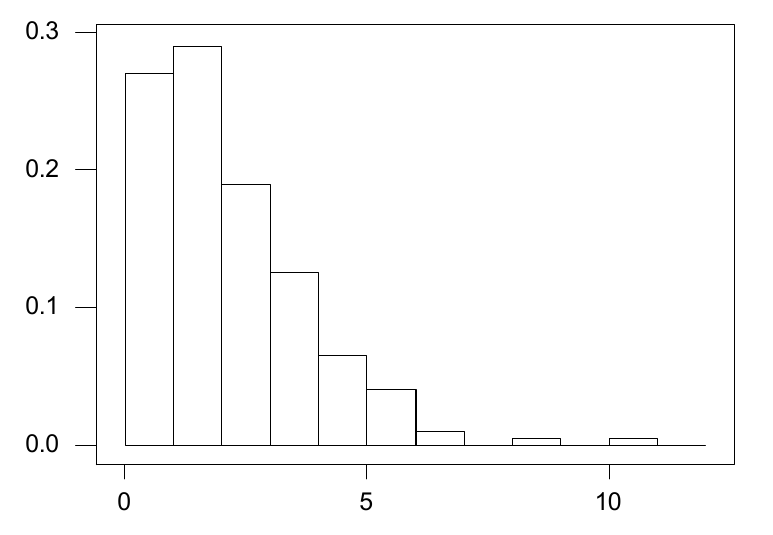
Exercícios computacionais
5.5.16 Faça o seguinte com base nos dados do Exercício 5.4.5. (a) Calcule as estatísticas de ordem desses dados.(b) Calcule a função de distribuição empírica nos pontos dos dados.(c) Calcule a média amostral e o desvio padrão amostral.(d) Obtenha a mediana amostral e a amplitude interquartil amostral.(e) Com base nos histogramas obtidos no Exercício 5.4.5, que conjunto de estatísticas descritivas você acha adequado para medir a posição e a dispersão?(f) Suponha que o primeiro valor dos dados foi registrado incorretamente como 13,9 em vez de 3,9. Repita os itens (c) e (d) usando esse conjunto de dados e compare suas respostas com as obtidas antes. Você consegue tirar alguma conclusão geral sobre essas medidas? Justifique seu raciocínio.
5.5.17 Faça o seguinte com base nos dados do Exemplo 5.5.6. (a) Calcule as estatísticas de ordem desses dados.(b) Faça o gráfico da função de distribuição empírica (só nos pontos da amostra).(c) Calcule a mediana amostral e a amplitude interquartil amostral e faça um boxplot. Há valores atípicos?(d) Com base no boxplot, que conjunto de estatísticas descritivas você acha adequado para medir a posição e a dispersão?(e) Suponha que o primeiro valor dos dados foi registrado incorretamente como 84,9 em vez de 64,9. Repita os itens (c) e (d) usando esse conjunto de dados e veja se alguma observação é classificada como valor atípico.
5.5.18 Gere uma amostra de 30 de uma distribuição \(N(10, 2)\) e uma amostra de 1 de uma distribuição \(N(30, 2)\). Junte-as para formar uma única amostra de 31. (a) Faça um boxplot desses dados.(b) O que você observa nesse gráfico?(c) Com base no boxplot, que característica você acha que seria adequada para medir a posição e a dispersão da distribuição? Explique por quê.
5.5.19 Gere uma amostra de 50 de uma distribuição \(\chi^2(1)\). (a) Faça um boxplot desses dados.(b) O que você observa nesse gráfico?(c) Com base no boxplot, que característica você acha que seria adequada para medir a posição e a dispersão da distribuição? Explique por quê.
5.5.20 Gere uma amostra de 50 de uma distribuição \(N(4, 1)\). Suponha que seu interesse seja estimar o 90º percentil \(x_{0{,}9}\) dessa distribuição e que fingimos que \(\mu = 4\) e \(\sigma = 1\) são desconhecidos. (a) Calcule uma estimativa de \(x_{0{,}9}\) com base na estatística de ordem adequada.(b) Calcule uma estimativa com base no fato de que \(x_{0{,}9} = \mu + \sigma z_{0{,}9}\), em que \(z_{0{,}9}\) é o 90º percentil da distribuição \(N(0, 1)\).(c) Se você soubesse, ou pelo menos estivesse disposto a supor, que a amostra veio de uma distribuição normal, qual das estimativas dos itens (a) ou (b) você preferiria? Explique por quê.
Problemas
5.5.21 Determine uma fórmula para a mediana amostral baseada em interpolação (isto é, usando (5.5.3)) quando \(n\) é ímpar. (Sugestão: use a função menor inteiro, ou teto, \(\lceil x\rceil = {}\)menor inteiro maior ou igual a \(x\).)
5.5.22 Uma alternativa à função de distribuição empírica é definir uma função de distribuição \(\tilde F\) por \(\tilde F(x) = 0\) se \(x < x_{(1)}\), \(\tilde F(x) = 1\) se \(x \ge x_{(n)}\), \(\tilde F(x) = \hat F(x_{(i)})\) se \(x = x_{(i)}\), e \[ \tilde F(x) = \hat F(x_{(i)}) + \frac{\hat F(x_{(i+1)}) - \hat F(x_{(i)})}{x_{(i+1)} - x_{(i)}} \bigl(x - x_{(i)}\bigr) \] se \(x_{(i)} \le x \le x_{(i+1)}\), para \(i = 1, \ldots, n\). (a) Mostre que \(\tilde F(x_{(i)}) = \hat F(x_{(i)})\) para \(i = 1, \ldots, n\) e que \(\tilde F\) é crescente de 0 a 1.(b) Prove que \(\tilde F\) é contínua em \(\bigl(x_{(1)}, \infty\bigr)\) e contínua à direita58 em toda parte.(c) Mostre que, para \(p \in [1/n, 1)\), o valor \(\tilde x_p\) definido em (5.5.3) é a solução de \(\tilde F(\tilde x_p) = p\).
Tópicos para discussão
5.5.23 Às vezes se argumenta que a estatística não precisa de uma teoria formal para prescrever inferências. Em vez disso, seria melhor deixar a prática estatística a cargo do profissional experiente, que decide qual é a abordagem sensata em cada problema. Comente essas afirmações.
5.5.24 Quão razoável você acha que é um pesquisador supor que uma variável aleatória tem distribuição normal? Discuta o papel das suposições na modelagem científica.
Notas do capítulo
- Termo modelo de probabilidade — no original, probability model ↩
- Termo medida de probabilidade — no original, probability measure ↩
- Termo verossimilhança — no original, likelihood ↩
- Termo tempo de vida — no original, lifelength ↩
- Termo tratamento — no original, treatment ↩
- Termo esperança — no original, expectation ↩
- Termo tamanho da amostra — no original, sample size ↩
- Termo espaço amostral — no original, sample space ↩
- Termo predição — no original, prediction ↩
- Termo estimativa — no original, estimate ↩
- Termo valor esperado — no original, expected value ↩
- Termo probabilidade condicional — no original, conditional probability ↩
- Termo distribuição condicional — no original, conditional distribution ↩
- Termo preditor — no original, predictor ↩
- Termo erro quadrático médio — no original, mean-squared error ↩
- Termo variância — no original, variance ↩
- Termo função de probabilidade — no original, probability function ↩
- Termo espaço paramétrico — no original, parameter space ↩
- Termo independentes e identicamente distribuídas — no original, independent and identically distributed ↩
- Termo densidade conjunta — no original, joint density ↩
- Termo variável aleatória — no original, random variable ↩
- Nota do tradutor Na legenda da Figura 5.3.1, o original traz Exponencial\((1{,}5)\), mas o texto e a curva impressa (que começa em \(f(0) \approx 0{,}67\)) correspondem à Exponencial\((2/3)\), cuja média é \(1{,}5\); a curva foi desenhada pela Exponencial\((2/3)\). ↩
- Termo injetora — no original, one-to-one ↩
- Termo modelo normal de locação e escala — no original, location-scale normal model ↩
- Termo desvio padrão — no original, standard deviation ↩
- Termo verificação de modelos — no original, model checking ↩
- Termo função densidade — no original, density function ↩
- Termo estudo observacional — no original, observational study ↩
- Termo função de distribuição acumulada — no original, cumulative distribution function ↩
- Termo função de distribuição empírica — no original, empirical distribution function ↩
- Termo amostragem aleatória simples — no original, simple random sampling ↩
- Termo lei fraca dos grandes números — no original, weak law of large numbers ↩
- Termo frequência relativa — no original, relative frequency ↩
- Termo amostragem por levantamento — no original, survey sampling ↩
- Termo distribuição conjunta — no original, joint distribution ↩
- Termo erro de não resposta — no original, nonresponse error ↩
- Nota do tradutor o original traz \(n = 3\); pelo enunciado (amostra de \(n = 4\)) seria \(n = 4\) ↩
- Nota do tradutor o original traz \(\pi_i\) nos dois argumentos; pelo contexto seria \(\pi_i\) e \(\pi_j\), com \(i \ne j\) ↩
- Termo fator de correção para população finita — no original, finite population correction factor ↩
- Termo amostragem estratificada — no original, stratified sampling ↩
- Termo estimação — no original, estimation ↩
- Termo estritamente crescente — no original, strictly increasing ↩
- Termo estatísticas de ordem — no original, order statistics ↩
- Termo mediana amostral — no original, sample median ↩
- Termo quartis amostrais — no original, sample quartiles ↩
- Nota do tradutor o original traz “Exemplo 5.1.1”; os valores \(\bar{x} = 1{,}73\) e \(s = 2{,}097\) são os dos dados do Exemplo 5.5.1 ↩
- Termo amplitude interquartil — no original, interquartile range ↩
- Termo assimetria — no original, skewness ↩
- Nota do tradutor No original, o eixo vertical vai até \(0{,}03\) e o pico da curva fica perto de \(0{,}03\); a densidade \(\chi^2(4)\), \(f(x) = x e^{-x/2}/4\), tem máximo \(f(2) = 2e^{-1}/4 \approx 0{,}184\). O gráfico foi traçado pela fórmula, com o eixo ampliado até \(0{,}20\). ↩
- Termo valor atípico — no original, outlier ↩
- Termo região de credibilidade — no original, credible region ↩
- Termo região de confiança — no original, confidence region ↩
- Termo avaliação de hipóteses — no original, hypothesis assessment ↩
- Termo intervalo de credibilidade — no original, credible interval ↩
- Termo intervalo de confiança — no original, confidence interval ↩
- Termo semicomprimento — no original, half-length ↩
- Termo medidas de posição — no original, measures of location ↩
- Termo contínua à direita — no original, right continuous ↩